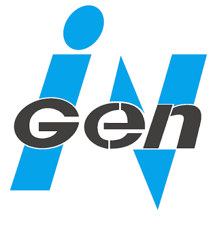
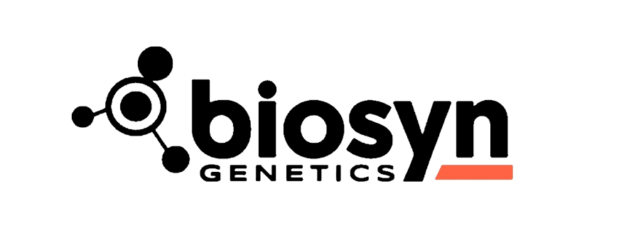
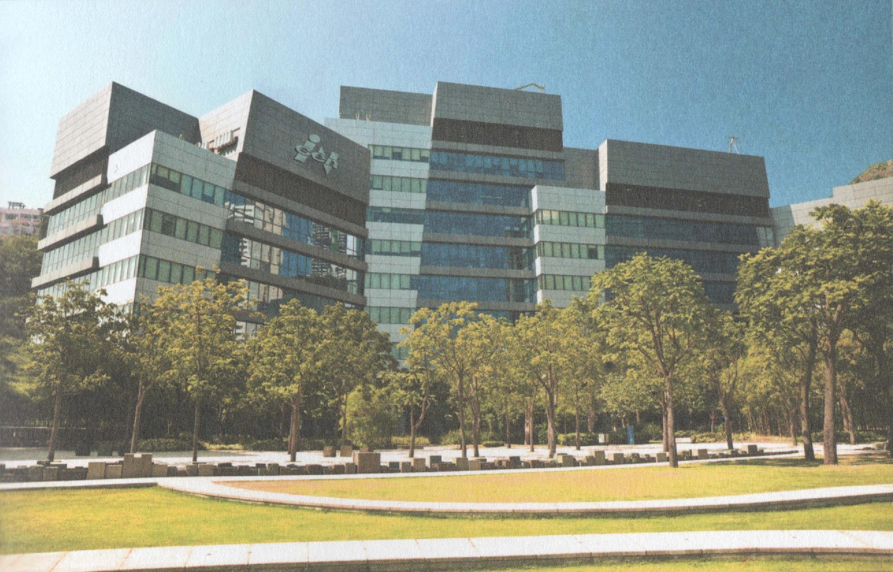
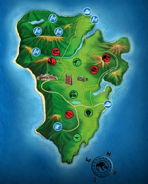
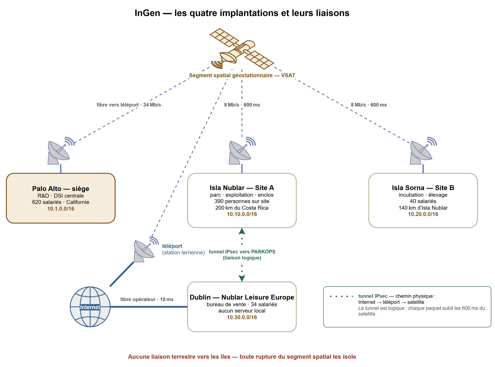
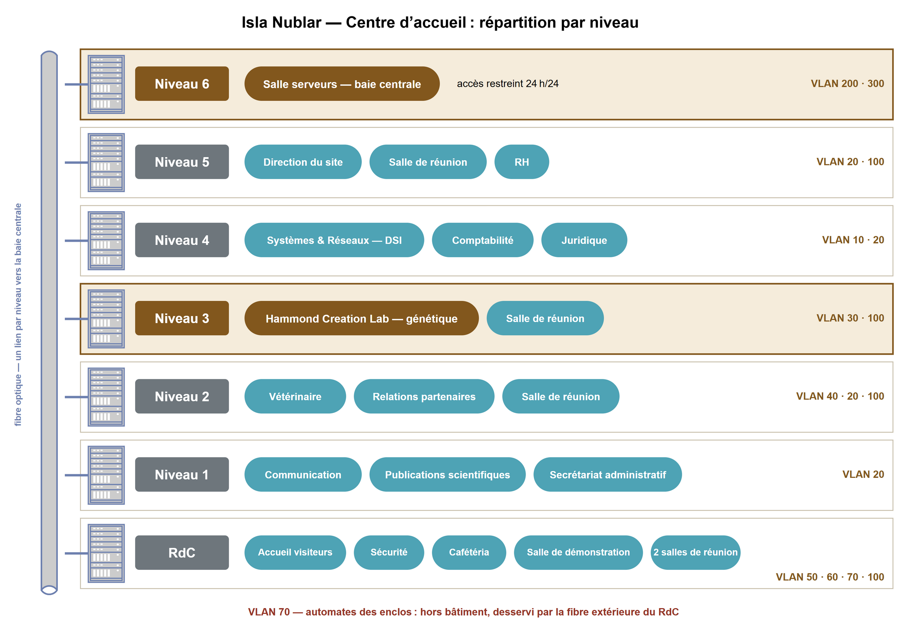
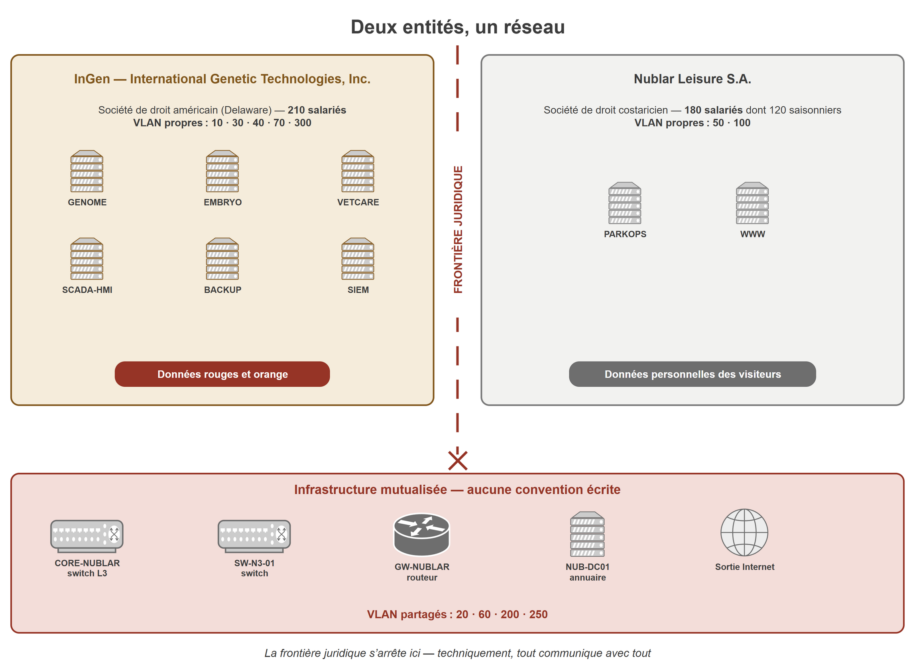
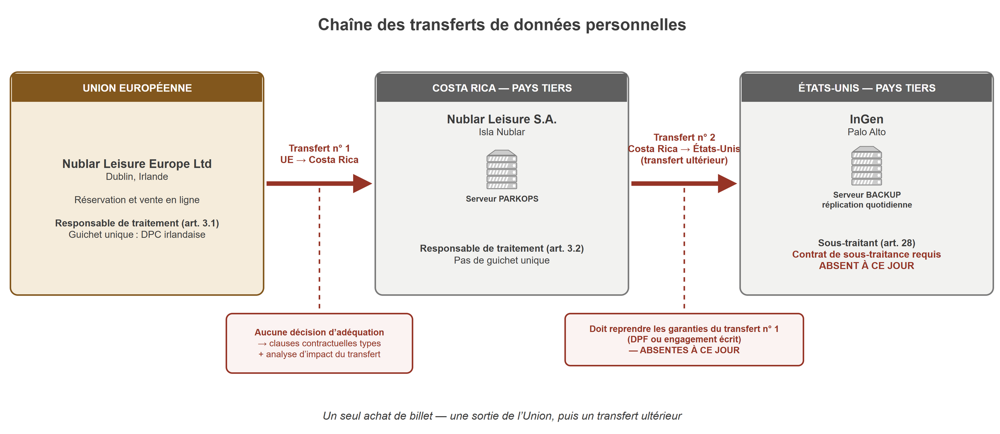
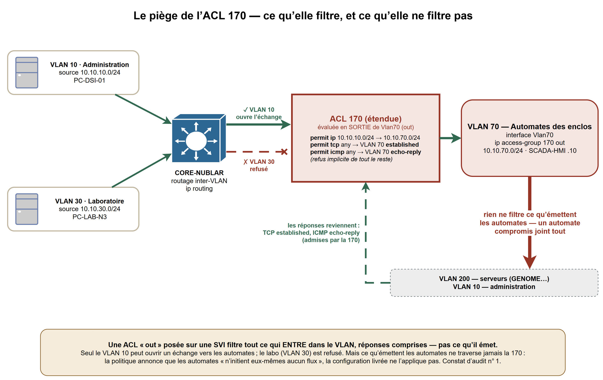
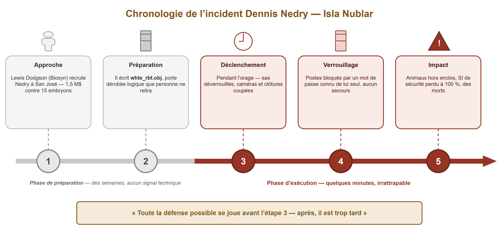

Durcir les trois équipements
Équipements durcis · recette validée

BTS SIO · Parcours SISR · Deuxième année
Le contexte de référence sur lequel s’appuient tous les projets de l’année : l’organisation d’InGen, son système d’information, l’architecture réseau d’Isla Nublar, les configurations initiales des matériels et l’état de la sécurité du site.
Reprendre la lecture : —
Deux fils traversent le livret et convergent en partie 10, la sécurité, qui s’appuie sur tout ce qui précède.
Avant chaque projet, relisez la partie qu’il mobilise. Le glossaire (partie 14) définit les termes techniques et les sigles employés. Chaque partie s’ouvre sur L’essentiel et se ferme sur Vérifiez-vous : faites ce dernier avant de passer à la suite.
Votre place dans l’entreprise. Vous êtes technicien ou technicienne au service Systèmes & Réseaux d’Isla Nublar — l’équipe locale de la DSI, installée au niveau 4 du centre d’accueil, dont les postes sont dans le VLAN 10. Vous rendez compte au responsable Systèmes & Réseaux du site, lui-même rattaché au DSI du groupe, à Palo Alto. Vos interlocuteurs sont les services utilisateurs des deux entités et, pour les applications, le service développement (partie 11). À l’oral, présentez chaque réalisation comme une demande reçue de votre responsable, à laquelle vous avez répondu.
Ce qu’InGen fabrique, ce qu’elle cache, et pourquoi son système d’information vaut plus cher que ses installations.
L’essentiel
GENOME, pas les bâtiments ni les animaux. Une fuite n’est pas un incident : c’est la perte d’InGen.International Genetic Technologies, Inc. — InGen — est fondée dans les années 1970 par l’excentrique milliardaire John Hammond et son associé Benjamin Lockwood. Le siège est établi à Palo Alto, en Californie, au cœur de la Silicon Valley.
Publiquement, InGen se présente comme une entreprise pionnière en génétique. En réalité, le projet de Hammond n’est pas la recherche médicale mais le divertissement de masse : ramener les dinosaures à la vie pour créer le parc d’attractions le plus spectaculaire au monde, sur l’île d’Isla Nublar, au large du Costa Rica.
GENOME.Le patrimoine d’InGen n’est ni ses bâtiments, ni ses animaux : c’est une base de séquences génomiques. Quelques téraoctets de données qui représentent des décennies de recherche et des milliards de dollars. Un vol de données n’est pas ici un incident réglementaire — c’est la perte de l’entreprise elle-même au profit d’un concurrent.
Sous la direction du généticien en chef, le Dr Henry Wu, InGen a développé une méthode de recréation en trois temps.
L’ADN de grenouille tropicale employé pour compléter les séquences permet à certains individus de changer naturellement de sexe dans un environnement exclusivement femelle. La reproduction incontrôlée que le mathématicien Ian Malcolm avait annoncée se produit : « La vie trouve toujours un chemin. »
Retenez la structure du raisonnement, elle vaut pour les systèmes d’information : une mesure de sécurité — ici, la stérilité — a été contournée non pas par une attaque, mais par un effet de bord d’un choix technique fait ailleurs, pour une tout autre raison. C’est le mode de défaillance le plus fréquent et le plus difficile à anticiper. Vous en verrez l’équivalent exact dans la configuration initiale du réseau.

InGen est engagée dans une guerre industrielle féroce contre son principal rival, Biosyn Genetics. Les deux laboratoires se disputent depuis plus de quinze ans les mêmes gisements d’ambre, les mêmes chercheurs et les mêmes financements. L’affrontement a depuis longtemps quitté le terrain scientifique pour celui des cabinets d’avocats et des officines de renseignement économique.
L’enjeu n’est pas commercial mais scientifique, et c’est ce qui rend la rivalité si dangereuse. Biosyn n’a jamais réussi à reproduire la méthode d’extraction d’InGen. Elle dispose de laboratoires équivalents, de budgets comparables et de généticiens de même niveau, mais il lui manque le procédé — ces quinze années de tâtonnements, d’échecs et d’intuitions que le Dr Wu a consignés dans une base de données. Depuis longtemps, elle a cessé d’essayer de le redécouvrir : elle cherche à se le procurer.
Cette asymétrie détermine entièrement la nature des attaques que subit InGen, et il faut l’avoir comprise pour concevoir une défense qui ait un sens. Biosyn ne cherche ni à détruire son concurrent, ni à lui extorquer de l’argent, ni à lui nuire publiquement. Une fuite retentissante sur la sécurité du parc desservirait d’ailleurs toute la profession, elle comprise. Elle cherche à copier, et à ce que personne ne le sache jamais.
Une attaque réussie de Biosyn ne produit donc aucun symptôme : pas de service indisponible, pas de fichier chiffré, pas de rançon réclamée, pas d’écran de revendication. Rien qu’un volume de données sortant très légèrement supérieur à la normale, étalé sur des semaines, à des heures crédibles, depuis un compte légitime. C’est exactement le contraire du profil d’un rançongiciel, et c’est pourquoi les outils qui protègent bien contre l’un ne protègent pas du tout contre l’autre. Retenez-le : on ne se défend pas contre « les pirates », on se défend contre un adversaire donné, avec un objectif donné.
Répondez de tête, à voix haute ou par écrit, avant d’ouvrir la réponse. Chercher, se tromper puis corriger fixe mieux que relire.
La direction veut d’abord investir dans une sauvegarde hors ligne irréprochable, « contre Biosyn ». Que lui répondez-vous ?
La mesure est bonne, mais elle vise un autre adversaire. Une sauvegarde protège la disponibilité et l’intégrité : elle permet de repartir après une destruction. Biosyn ne détruit rien, elle copie : c’est la confidentialité qui est en jeu. Contre elle, il faut cloisonner GENOME, surveiller les volumes sortants et centraliser les journaux (chantiers 10, 7 et 3). La sauvegarde, elle, répond au rançongiciel (chantier 5).
Pourquoi une exfiltration réussie de Biosyn est-elle si difficile à voir, et de quoi aurait-on besoin pour la détecter ?
Aucun événement n’est anormal pris isolément : compte légitime, heures crédibles, volume à peine supérieur à l’habitude, étalé sur des semaines. Il faut une référence (le volume habituel), une mesure continue des flux sortants et une corrélation dans le temps. C’est le rôle de la supervision avec seuils (chantier 7) et du SIEM (chantier 3).
En quoi la faille de l’ADN de grenouille et une liste de contrôle d’accès posée dans un seul sens relèvent-elles du même raisonnement ?
Dans les deux cas, la mesure fait exactement ce pour quoi elle a été conçue, mais le raisonnement qui l’entoure est incomplet. La stérilité est contournée par un choix fait pour une autre raison : combler les séquences. La liste 170 filtre ce qui entre dans le VLAN 70, pas ce qui en sort. Personne ne s’est trompé de commande : l’effet de bord n’a pas été anticipé.
Un siège continental et deux installations insulaires isolées : toute la difficulté d’administration d’InGen tient dans cette géographie.
L’essentiel
On peut résumer la situation d’InGen en une phrase : l’entreprise a construit deux centres de données au milieu du Pacifique, à deux cents kilomètres de la première ville, sans autre lien avec le monde qu’une antenne parabolique posée sur un toit.
Cela paraît anecdotique tant qu’on n’a pas essayé d’y travailler. Un disque défaillant à Palo Alto se remplace dans l’heure ; le même disque, à Isla Sorna, attend la rotation d’hélicoptère du mardi — et si la météo est mauvaise, celle du mardi suivant. Un technicien envoyé sur place mobilise deux jours de transport pour une intervention de vingt minutes. Une mise à jour de sécurité de huit gigaoctets, que l’on déploie distraitement sur un site continental, monopolise ici pendant des heures la seule liaison du site. Or cette liaison porte aussi la réplication des sauvegardes, la remontée des journaux et l’accès des équipes de Palo Alto. D’où un serveur de mises à jour local, qui ne télécharge qu’une fois pour toute l’île.
Aucune de ces contraintes n’est informatique au départ. Toutes deviennent des décisions d’architecture : ce qu’on stocke localement, ce qu’on réplique, ce qui doit survivre à une coupure de trois jours, ce qu’on accepte de perdre. C’est ce qui rend ce contexte formateur — les bonnes réponses n’y sont pas les réponses par défaut.
Direction générale, recherche génomique amont, juridique, finance et DSI centrale. C’est ici que sont pilotés les trois sites.
La vitrine commerciale : le parc d’attractions. Zone visiteurs, centre d’accueil, laboratoire de présentation, enclos, centre de contrôle.
La fabrique secrète : incubation et élevage à grande échelle. Les animaux y grandissent avant transfert vers le Site A.



draw.io/02-liaisons-inter-sites.drawio.Une liaison satellite, c’est 600 ms de temps aller-retour, une bande passante faible et une disponibilité dégradée par la météo — or les deux sites sont en zone tropicale, en pleine saison des ouragans une partie de l’année. Toute architecture qui suppose une liaison permanente vers Palo Alto est condamnée d’avance.
Conséquence directe : chaque île doit fonctionner en autonomie complète — contrôleur de domaine local, DNS et DHCP locaux, sauvegarde locale, résolution de secours. La réplication vers le siège est nécessairement asynchrone.
Un satellite géostationnaire tourne à 35 786 km au-dessus de l’équateur. Un trajet sol → satellite → sol parcourt donc environ 72 000 km, soit 240 ms à la vitesse de la lumière. Une question et sa réponse font ce trajet deux fois : environ 480 ms de propagation, plus les traitements — d’où les 600 ms de temps aller-retour (RTT).
Ordres de grandeur sur la liaison de 8 Mb/s d’Isla Nublar, supposée entièrement occupée (plusieurs sessions en parallèle) : une mise à jour de 8 Go mobilise la liaison plus de deux heures ; un téraoctet de sauvegarde, près de douze jours.
Sur Isla Nublar, l’essentiel des services administratifs et scientifiques est regroupé dans le centre d’accueil, un bâtiment de sept niveaux. Chaque niveau dispose d’une baie de brassage reliée par fibre à la baie centrale de la salle serveurs, au niveau 6. Les numéros de VLAN portés en marge droite de la figure anticipent sur la partie 3 : ils désignent les réseaux logiques présents à chaque niveau.

draw.io/01-coupe-centre-accueil.drawio.Le bâtiment mérite qu’on s’y arrête, parce qu’il explique beaucoup de choix réseau. C’est une rotonde de béton et de verre plantée au centre de la vallée principale, conçue par un architecte qui n’avait jamais entendu parler de baies de brassage. Les niveaux s’ouvrent en balcon sur un atrium central de trente mètres, presque sans cloison pleine. Les gaines techniques ont été ajoutées après coup, dans les angles, là où il restait de la place. Un seul conduit vertical dessert les sept niveaux — celui qui porte la fibre de la figure ci-dessus. Il n’y en a pas de second.
Chaque palier possède sa baie, logée dans un local d’environ quatre mètres carrés qui sert aussi de réserve de ménage aux niveaux inférieurs. Ces locaux ferment à clé — la même pour tous, dont une copie circule dans chaque équipe d’entretien. Personne n’a jamais considéré cela comme un problème de sécurité, puisqu’il ne s’y trouve « que des câbles ».
Toutes les salles de réunion sont équipées d’un point d’accès Wi-Fi placé par défaut dans le VLAN 100 « Visiteurs », qui n’autorise qu’un accès Internet. Le point d’accès peut être rattaché à la demande à un VLAN présent au niveau. La salle de démonstration, au rez-de-chaussée, est destinée à l’accueil des organismes de contrôle et des partenaires scientifiques : elle dispose de paillasses et d’équipements de laboratoire en plus d’une salle de réunion.
Voilà pour les murs. La suite décrit ce qui circule dedans : les applications, les serveurs, et le plan d’adressage qui structure tout le reste.
Répondez de tête, à voix haute ou par écrit, avant d’ouvrir la réponse. Chercher, se tromper puis corriger fixe mieux que relire.
Isla Nublar passe de 8 à 50 Mb/s. Une copie de fichier par une seule session TCP, avec une fenêtre de 64 Ko, ira-t-elle plus vite ?
Non. Le débit d’une session TCP est plafonné à fenêtre ÷ RTT : 64 Ko × 8 ÷ 0,6 s ≈ 0,87 Mb/s, quel que soit l’abonnement. Le débit acheté ne réduit pas la latence. Pour en profiter, il faut agrandir la fenêtre TCP ou paralléliser les sessions.
Pourquoi le serveur de mises à jour local est-il une mesure de disponibilité, et pas seulement d’économie ?
La liaison est unique et porte tout le reste : réplication des sauvegardes, remontée des journaux, accès des équipes de Palo Alto. Huit gigaoctets téléchargés par chaque poste la monopoliseraient pendant des heures. Un serveur local télécharge une seule fois pour toute l’île et libère la liaison.
Une réplication synchrone de GENOME vers Palo Alto garantirait zéro perte. Pourquoi l’écarte-t-on ?
En mode synchrone, chaque écriture attend l’accusé du site distant avant d’être validée. Chacune coûterait donc au moins 600 ms, et la moindre coupure satellite bloquerait l’application. On réplique en asynchrone, en acceptant de perdre les dernières minutes : c’est un choix de RPO, assumé.
Les locaux de brassage ouvrent tous avec la même clé, dont une copie circule dans chaque équipe d’entretien. Quels constats de la partie 10 cela aggrave-t-il ?
Le constat 2 : la console n’a pas de mot de passe, donc on obtient le mode privilégié en trente secondes depuis une baie de palier. Le constat 7 : les ports libres sont actifs, donc un boîtier pirate peut rester branché à demeure. Faiblesse physique et faiblesse de configuration se combinent, alors qu’aucune des deux, seule, ne paraît grave.
Des applications de gestion très classiques, deux ou trois systèmes dont dépend directement la vie des personnes présentes sur l’île — et la méthode qui transforme ce constat en décisions : l’analyse des risques.
L’essentiel
10.site.VLAN.machine, même découpage du /24 partout, cinq VLAN en exception (10, 70, 100, 250, 300). Et la politique de flux annoncée n’est pas appliquée.InGen exploite un système d’information qui superpose trois natures très différentes. Les confondre est la première erreur d’architecture à éviter, et c’est pourtant celle que le site a commise : tout est arrivé au même endroit, au même moment, sous la même autorité, parce qu’il fallait ouvrir.
La distinction n’est pas académique. Elle détermine ce qui se passe quand ça tombe, et c’est le seul critère qui vaille pour classer un système. Si la billetterie s’arrête, la file d’attente s’allonge et la journée est mauvaise. Si la base des séquences fuit, l’entreprise a perdu quinze ans d’avance et ne le saura peut-être jamais. Si les clôtures s’ouvrent, des gens meurent. Trois systèmes hébergés dans la même baie, à trois mètres les uns des autres, et trois conséquences sans commune mesure.
Ces trois natures n’ont ni la même criticité, ni les mêmes utilisateurs, ni le même cycle de mise à jour. Elles ne doivent partager ni le même réseau, ni les mêmes comptes, ni le même administrateur. Tout le travail de l’année consiste à faire tenir cette séparation.
Classer les systèmes par criticité dit ce qui est important. Cela ne dit pas encore par quoi commencer, ni combien investir, ni ce que l’on accepte de ne pas traiter. Pour cela, il faut passer du système au risque — et c’est un changement de regard : un risque n’est pas un équipement, c’est un scénario. « Le serveur GENOME » n’est pas un risque ; « Biosyn exfiltre la base des séquences sans être détectée » en est un.
La démarche présentée ici est celle d’EBIOS Risk Manager, la méthode publiée par l’ANSSI, dans une version volontairement réduite. La méthode complète se déroule en cinq ateliers, du cadrage et du socle de sécurité jusqu’au traitement du risque. Nous n’en gardons que la colonne vertébrale, celle qui permet de construire et de défendre une matrice des risques.
Le besoin de sécurité d’une information ou d’un service s’exprime selon quatre
critères, notés de 1 à 4 : Disponibilité (accessible quand il le
faut), Intégrité (exacte et non altérée), Confidentialité
(accessible aux seules personnes habilitées), Preuve ou traçabilité
(on sait qui a fait quoi, et quand). Les clôtures exigent D4 et I4 ; la base
GENOME, C4 ; les journaux du SIEM (collecteur central des journaux), P4. La classification par couleurs de
la partie 10 ne mesure que la confidentialité.
Un audit relève des vulnérabilités (partie 10) ; une analyse de risques les relie à des menaces et à des valeurs métier (cette section) ; un plan de traitement décide quoi en faire. Référentiels : EBIOS Risk Manager (ANSSI), ISO/IEC 27005.
La « source de risque » d’EBIOS correspond à la « menace » du rappel ci-dessus ; les termes suivants le complètent sans le répéter.
GENOME porte le procédé, le VLAN 70 porte la sécurité des personnes,
l’équipe DSI porte à peu près tout.Une échelle n’a de valeur que si ses niveaux sont définis avant de coter les risques, avec des critères propres à l’entreprise. Voici celles d’InGen — remarquez que la gravité y est ancrée sur des conséquences concrètes, pas sur des adjectifs.
| Niveau | Libellé | Critère chez InGen |
|---|---|---|
| G1 | Mineure | Gêne interne, aucune conséquence pour les visiteurs ni pour le patrimoine ; retour à la normale en heures. |
| G2 | Significative | Exploitation dégradée plusieurs jours, pertes financières limitées, aucune donnée rouge ni orange touchée. |
| G3 | Grave | Arrêt de l’exploitation, divulgation de données personnelles, sanction réglementaire, atteinte durable à l’image. |
| G4 | Critique | Vies humaines menacées, ou perte du patrimoine génétique — l’entreprise elle-même est en jeu. |
| Niveau | Libellé | Critère chez InGen |
|---|---|---|
| V1 | Peu vraisemblable | Demande des moyens ou un concours de circonstances hors de portée des sources de risque identifiées. |
| V2 | Vraisemblable | À la portée d’au moins une source de risque motivée ; les défenses actuelles la gênent sans l’arrêter. |
| V3 | Très vraisemblable | La source de risque existe, est motivée, et l’état initial du réseau lui laisse un chemin connu. |
| V4 | Quasi certaine | Se produira de façon quasi certaine dans l’année : phénomène naturel récurrent — la météo tropicale suffit — ou attaque automatisée déjà observée contre le SI (balayages, hameçonnage de masse). |
Huit scénarios que ce livret développe — la filiale en partie 4, le RGPD en partie 6, Nedry et les failles de configuration en partie 10 : lisez cette section une première fois pour la méthode, et revenez-y après la partie 10 pour en contester les cotations. L’analyse n’invente pas ces scénarios, elle les formalise. La cotation tient compte de l’état initial du réseau, celui des configurations livrées : c’est tout son intérêt, on recotera en fin d’année pour mesurer le chemin parcouru.
| N° | Scénario de risque (événement redouté) | Valeur métier | Source de risque | G | V |
|---|---|---|---|---|---|
| R1 | Exfiltration silencieuse de la base des séquences | Patrimoine génétique | Biosyn | G4 | V3 |
| R2 | Chiffrement des serveurs de gestion par rançongiciel | Continuité d’exploitation | Cybercriminalité | G3 | V3 |
| R3 | Prise de contrôle des automates — clôtures et sas | Sécurité des personnes | Attaquant via un poste du VLAN 10, le fournisseur d’automates ou un coffret d’enclos | G4 | V2 |
| R4 | Abus des droits par un administrateur seul | Tout le SI | Menace interne — le précédent Nedry | G4 | V3 |
| R5 | Coupure satellite prolongée par la météo | Liaisons inter-sites | Environnement — saison des ouragans | G2 | V4 |
| R6 | Rebond depuis un poste de caisse de la filiale vers le VLAN 200 | Patrimoine génétique | Attaquant via NL S.A. — VLAN partagé | G4 | V3 |
| R7 | Divulgation des données personnelles des visiteurs | Confiance · conformité | Cybercriminalité, négligence | G3 | V2 |
| R8 | Rupture de la fibre unique des enclos | Supervision des enclos | Travaux, engin de chantier | G3 | V2 |
R5 est quasi certain et pourtant de gravité limitée : la coupure satellite arrivera, mais l’architecture l’a prévue — contrôleur de domaine, DNS, DHCP et sauvegarde locaux sur chaque île. C’est un risque déjà traité par conception, et sa position dans la matrice le montre. R3 est critique en gravité mais « seulement » vraisemblable : il demande un accès préalable — un poste du VLAN 10, le fournisseur, un coffret. R4, lui, est coté V3, et c’est l’échelle qui l’impose : la source de risque existe et elle est motivée — Biosyn a déjà acheté un administrateur —, et l’état initial lui laisse un chemin connu, puisque rien ne gênerait un administrateur décidé. On serait tenté de le coter V2 faute de mobile identifié aujourd’hui ; ce serait confondre l’absence d’indice avec l’absence de source. Ne vous y trompez pas — c’est exactement le profil des risques qui ruinent une entreprise, parce que leur rareté sert d’excuse pour ne rien faire.
On croise les deux échelles. Chaque cellule reçoit une couleur — le niveau de criticité — et les huit risques y prennent place. La lecture est immédiate : on traite d’abord le coin supérieur droit, puis on descend. La règle de couleur, fixée avant toute cotation comme les échelles : niveau = G × V ; de 1 à 3 faible, de 4 à 6 modéré, 8 et 9 majeur, 12 et 16 critique.
| Gravité ↓ · Vraisemblance → | V1 peu vraisemblable | V2 vraisemblable | V3 très vraisemblable | V4 quasi certaine |
|---|---|---|---|---|
| G4 — critique | — | R3 | R1 · R4 · R6 | — |
| G3 — grave | — | R7 · R8 | R2 | — |
| G2 — significative | — | — | — | R5 |
| G1 — mineure | — | — | — | — |
La couleur d’une case fixe le niveau d’attention par défaut. La décision peut s’en écarter si elle est justifiée par écrit et validée par la direction : c’est le cas de R5, déjà réduit par conception, dont le « plan d’action daté » se limite à un test annuel de coupure.
R1, R4 et R6 dominent tout. Ce sont les trois seuls risques en
zone critique. R1 le doit autant à la motivation de l’adversaire qu’à l’état du réseau :
tant que GENOME partage son VLAN avec PARKOPS, le serveur de
la filiale, et que rien ne surveille les volumes sortants, V reste à 3.
R6 est son jumeau discret : même valeur métier, même gravité, même
case — deux chemins vers la même perte. On ne cote pas la gravité d’un chemin, on cote
celle de la perte. R4 y figure pour une autre raison : rien, à l’état
initial, ne sépare les pouvoirs d’un administrateur, et le précédent Nedry prouve que
la source existe. Et remarquez R5, à l’extrémité droite de sa
ligne : quasi certain, de gravité contenue. Une matrice bien
construite ne montre pas que des urgences ; elle montre aussi ce qui est
déjà sous contrôle.
Face à un risque, il n’existe que quatre décisions possibles — et « installer un outil » n’en est pas une, c’est au mieux la mise en œuvre de la première.
Deux chiffres fixent toute politique de sauvegarde : le RPO, perte de données maximale admissible (une sauvegarde par nuit donne un RPO de 24 heures), et le RTO, durée d’interruption maximale admissible. Le RPO fixe la fréquence des sauvegardes ; le RTO, l’architecture de reprise.
La règle 3-2-1 — trois copies, sur deux supports, dont une hors site — se complète aujourd’hui en 3-2-1-1-0 : une copie hors ligne ou immuable, que le rançongiciel ne peut pas chiffrer, et zéro erreur à la restauration testée. Une sauvegarde jamais restaurée est une hypothèse ; seule une restauration chronométrée prouve le RTO. Le PCA maintient l’activité en mode dégradé (la commande manuelle des clôtures) ; le PRA organise le retour à la normale.
Chez InGen, la sauvegarde ne vit ni sur le serveur qu’elle protège, ni dans le même domaine d’administration. Et un téraoctet à 8 Mb/s, c’est, on l’a vu en partie 2, près de douze jours de liaison saturée : la première copie distante part par support physique, seuls les incréments traversent ensuite le satellite.
| N° | Décision | Mesures retenues | Chantiers |
|---|---|---|---|
| R1 | Réduire | Scinder le VLAN 200, surveiller les volumes sortants, journalisation centralisée | 2 · 3 · 7 · 10 |
| R2 | Réduire + transférer | Sauvegarde 3-2-1 avec copie hors ligne, restauration chronométrée ; assurance cyber pour le coût résiduel | 5 |
| R3 | Réduire | Restreindre l’entrée du VLAN 70 à un poste d’administration dédié du VLAN 10, limiter le dialogue des automates à SCADA-HMI (dans leur VLAN), interdire tout flux initié depuis le VLAN 70, contrôler l’intégrité des micrologiciels, fermer les coffrets ; commande manuelle de dernier recours (réduit G) | 2 |
| R4 | Réduire | Comptes nominatifs, séparation des rôles, coffre-fort de secrets, bris de glace ; journaux hors d’atteinte de l’administrateur | 3 · 4 |
| R5 | Accepter | Déjà réduit par conception — autonomie locale des îles. Résiduel accepté par écrit par la direction ; plan : test de coupure satellite une fois par an | — |
| R6 | Réduire | Cloisonner les deux entités, pare-feu au point de démarcation | 10 · 11 |
| R7 | Réduire + transférer | Encadrer la sous-traitance et les transferts, minimiser la collecte ; assurance | 12 · 13 |
| R8 | Réduire | Aucun chantier ne couvre ce risque à ce jour — voir l’exercice ci-dessous | ? |
La quatrième option, éviter, consiste à renoncer à l’activité qui porte le risque. Elle paraît théorique — jusqu’au jour où elle ne l’est plus : renoncer à la reconnaissance faciale des visiteurs, c’est éviter un risque réglementaire entier plutôt que de le réduire. Un architecte qui ne propose jamais l’évitement n’a que trois options sur quatre.
1. La matrice révèle un trou : R8 est coté, décidé « à réduire »… et aucun des seize chantiers ne le couvre. Rédigez le chantier n° 17 — intitulé, constats couverts, bloc et épreuve — sur le modèle de la table de la partie 10. 2. Un vétérinaire perd son ordinateur portable, qui contient une copie locale de dossiers de soins. Formulez l’événement redouté, choisissez la valeur métier, cotez G et V en citant les critères des échelles, placez-le dans la matrice et proposez une décision de traitement. Les deux exercices se défendent en cinq lignes chacun — c’est le format d’un oral.
EBIOS Risk Manager complet ajoute ce qui manque ici. L’atelier 1 évalue le socle de sécurité (nos seize constats d’audit en tiennent lieu). L’atelier 2 étudie les couples source de risque / objectif visé. L’atelier 3 construit les scénarios stratégiques, qui passent par l’écosystème : fournisseurs, filiale, prestataires. L’atelier 4 décrit les scénarios opérationnels, qui déroulent le chemin technique de l’attaque. L’atelier 5 synthétise ce que nous venons de faire — la cartographie des risques — et en tire le plan de traitement. Retenez surtout que l’analyse n’est pas un document : c’est un rendez-vous périodique — on recote après chaque chantier, et la matrice de fin d’année ne doit plus ressembler à celle-ci.
Pause possible · la suite : segmentation, conventions, topologie et serveurs (≈ 12 min)
Constitué autour de VLAN, le réseau d’Isla Nublar segmente les services de manière à cloisonner les usages. C’est la table de référence de tout le contexte ; l’environnement d’apprentissage n’en reprend qu’une partie.
Une adresse IPv4 compte 32 bits. Le préfixe /n indique combien de bits,
depuis la gauche, désignent le réseau ; les 32 − n restants désignent
l’hôte. Un réseau en /n contient 232−n
adresses, dont deux inutilisables : l’adresse de réseau (bits d’hôte à 0) et la
diffusion (bits d’hôte à 1).
/30 — 255.255.255.252 — 4 adresses, 2 hôtes : le transit du VLAN 300./29 — 255.255.255.248 — 8 adresses, 6 hôtes : le bloc public d’un site./24 — 255.255.255.0 — 256 adresses, 254 hôtes : un VLAN ordinaire./22 — 255.255.252.0 — 1 024 adresses, 1 022 hôtes : le Wi-Fi visiteurs,
de 10.10.100.0 à 10.10.103.255 (diffusion)./16 — 255.255.0.0 — 65 536 adresses : un site entier.
Les plages privées (RFC 1918) — 10.0.0.0/8, 172.16.0.0/12,
192.168.0.0/16 — ne sont jamais routées sur Internet : d’où la traduction
d’adresses en sortie. Vérifiez-vous : quelles sont les deux adresses utilisables de
172.31.0.4/30, et quelle est sa diffusion ?
| VLAN | Usage | Réseau | Passerelle | Hôtes | Labo |
|---|---|---|---|---|---|
| 10 | Systèmes & Réseaux — DSI | 10.10.10.0/24 | 10.10.10.1 | 18 | oui |
| 20 | Direction & administration du parc | 10.10.20.0/24 | 10.10.20.1 | 35 | — |
| 30 | Hammond Creation Lab — génétique | 10.10.30.0/24 | 10.10.30.1 | 42 | oui |
| 40 | Vétérinaire & soins animaliers | 10.10.40.0/24 | 10.10.40.1 | 26 | — |
| 50 | Exploitation du parc — billetterie, boutiques | 10.10.50.0/24 | 10.10.50.1 | 85 | — |
| 60 | Sécurité physique — vidéo, badges, sas | 10.10.60.0/24 | 10.10.60.1 | 140 | — |
| 70 | Automates des enclos — SCADA | 10.10.70.0/24 | 10.10.70.1 | 25 | oui |
| 100 | Wi-Fi visiteurs | 10.10.100.0/22 | 10.10.100.1 | 900 | projet Wi-Fi |
| 200 | Serveurs | 10.10.200.0/24 | 10.10.200.1 | 10 | oui |
| 250 | DMZ | 172.20.0.0/24 | 172.20.0.1 | 3 | — |
| 300 | Transit cœur ↔ routeur de sortie | 172.31.0.0/30 | 172.31.0.1 | 2 | oui |
Le VLAN 100 est en /22 et non en /24 : un parc reçoit
plusieurs milliers de visiteurs par jour, mais quelques centaines seulement sont
connectés en même temps. Avec un bail court (une heure), les 969 adresses de la plage DHCP (de 10.10.100.50 à 10.10.103.250, détaillée plus bas)
suffisent, là où un /24 serait épuisé avant midi. C’est le seul VLAN
dimensionné pour la foule, et c’est aussi le seul dont les équipements sont
hors de tout contrôle d’InGen. Les deux faits sont liés.
Le VLAN 300 en /30 ne contient que deux adresses utilisables : la
passerelle du commutateur de cœur et l’interface du routeur de sortie. C’est un segment
de transit, pas un réseau d’utilisateurs.
Cette table ne dit pas à qui chaque VLAN appartient : six d’entre eux relèvent de la société qui exploite le parc — présentée en partie 4 — ou sont partagés entre les deux entités. Voir la répartition par entité.
PARKOPS après authentification, le
relais de messagerie vers la messagerie interne (hébergée hors du périmètre décrit ici). Tout le reste est refusé et
journalisé.
Retenez bien la règle 3 : elle est écrite dans la politique de sécurité d’InGen, et
elle n’est pas réellement mise en œuvre dans la configuration livrée.
Le démontrer est le premier exercice de l’année — voir
les faiblesses de l’état initial. Dans le contexte complet,
le VLAN 60 est moins protégé encore : aucune liste ne garde l’interface
Vlan60, et NVR-CCTV répond à tous les VLAN, caisses de la
filiale comprises. Le chantier 2 traite les deux VLAN.
Une DMZ isole les serveurs exposés à Internet en partant du principe qu’ils seront attaqués. Elle n’a d’intérêt que si Internet n’atteint que les ports publiés, et si la DMZ n’initie vers l’intérieur que des flux nommés.
L’outil adapté est un pare-feu à états : il mémorise chaque connexion autorisée et laisse revenir automatiquement ses réponses. On écrit donc la règle dans un seul sens. Une ACL (liste de contrôle d’accès) Cisco classique, elle, est sans état : elle ignore qu’un paquet est une réponse, et chaque sens doit être pensé à part — c’est pourquoi les listes de contrôle d’accès du cœur, étudiées en partie 7, consacrent deux lignes sur trois au retour des réponses.
Tout équipement d’InGen porte un nom construit selon la même logique, en deux ou trois segments séparés par des tirets. Ce n’est pas une coquetterie : un nom qui se déduit évite un inventaire, et un nom qui ne se déduit pas devient une source d’erreur le jour de l’incident.
| Segment | Contenu | Valeurs | Exemple |
|---|---|---|---|
| 1 — Site | Code du site (deux ou trois lettres) | NUB · SOR · PA · DUB | NUB-DC01 · SOR-DC01 · PA-DC01 |
| 2 — Fonction | Rôle de la machine | DC, GW, CORE, SW, AP, BACKUP… | SOR-BACKUP |
| 3 — Localisation | Niveau, puis rang | N0 à N6, puis 01, 02… | SW-N3-01 |
GENOME, EMBRYO, PARKOPS, VETCARE —
parce qu’ils sont cités dans des documents non techniques, contrats compris, où
NUB-APP-04 n’aurait aucun sens pour personne.CORE-NUBLAR,
GW-NUBLAR, GW-SORNA — portent leur fonction en tête et le
site en toutes lettres : un rang ou un niveau n’aurait rien désigné pour un
équipement qui n’existe qu’en un exemplaire.SW-N3-01 se lit « à Nublar »).DC01),
et les coffrets par leur zone (SW-ENCLOS-02).FILES, BACKUP, PROXY, SIEM) sont désignés sans préfixe ; partout ailleurs, le code site est obligatoire (SOR-BACKUP, PA-SIEM).
Chaque réseau /24 d’InGen est découpé de la même façon, sur tous les sites.
Cette règle est impérative : c’est elle qui permet de savoir, en lisant
une adresse seule, à quelle famille appartient la machine — et donc d’écrire des règles
de filtrage lisibles.
| Plage | Nb | Affectation | Attribution |
|---|---|---|---|
| .1 | 1 | Passerelle — interface virtuelle du commutateur de cœur | statique |
| .2 → .9 | 8 | Équipements réseau : commutateurs d’accès, points d’accès, onduleurs | statique |
| .10 → .49 | 40 | Serveurs et équipements fixes | statique |
| .50 → .199 | 150 | Postes de travail | DHCP |
| .200 → .249 | 50 | Imprimantes, bornes, matériel spécifique | réservation DHCP |
| .250 → .254 | 5 | Intervention, tests, poste de secours | statique |
VLAN 100 — Wi-Fi visiteurs. C’est un /22 et non un
/24 : 10.10.100.1 en passerelle, puis une plage DHCP unique de
10.10.100.50 à 10.10.103.250, soit 969 baux possibles.
En dehors de la passerelle, aucune adresse statique n’y est attribuée, jamais.
VLAN 70 — automates des enclos. Aucun DHCP, aucune exception :
.1 passerelle, .10 pour SCADA-HMI, puis
.20 à .199 pour les automates, numérotés dans l’ordre
des enclos. L’automate de l’enclos 7 est en 10.10.70.27, celui de
l’enclos 8 en 10.10.70.28. Un équipement industriel dont l’adresse change
au gré d’un bail est un équipement qu’on ne peut ni superviser, ni désigner dans une
règle de filtrage.
VLAN 10 — Systèmes & Réseaux. C’est le VLAN qui porte les
adresses d’administration de tous les équipements du site, et ils sont plus de
dix : la plage réservée aux équipements réseau y est donc étendue à
.2 → .49 au lieu de .2 → .9. Répartition figée :
.2 → .7 commutateurs de niveau du plus haut au plus bas,
.11 → .14 coffrets d’enclos,
.21 → .30 points d’accès Wi-Fi. Les postes de la DSI commencent donc à
.50, comme partout ailleurs.
VLAN 300 — transit. Un /30 ne contient que deux adresses
utilisables : .1 pour le commutateur de cœur, .2 pour le
routeur. Il n’y a rien d’autre à y mettre, et c’est exactement l’intérêt d’un
/30 sur une liaison point à point.
VLAN 250 — DMZ. Elle est volontairement hors du /16 du
site, en 172.20.0.0/24 : aucune règle écrite pour
10.10.0.0/16 ne la couvre par accident. Sa passerelle,
172.20.0.1, est l’interface G0/1 de GW-NUBLAR et non une
SVI (interface virtuelle de VLAN) du cœur ; le numéro 250 n’existe que sur SW-DMZ-01.
Sans consulter aucune table : qui est 10.1.30.7 ?
10.20.200.60 ? 10.10.70.34 ? Si vous savez répondre en
trois secondes — site, VLAN, famille de machine, et pour la dernière le numéro
d’enclos —, la convention est acquise. Sinon, lisez la règle de lecture du
/16 en partie 5 — deuxième octet le site, troisième le
VLAN, quatrième la machine —, puis revenez à cet exercice.
Voici l’architecture de référence du site. C’est le schéma sur lequel s’appuieront tous les projets : le réseau d’apprentissage en est un sous-ensemble, et chaque amélioration que vous proposerez viendra s’y inscrire.

draw.io/03-topologie-isla-nublar.drawio.Le site complet ci-dessus est monté dans Packet Tracer à des fins de démonstration en cours : treize équipements d’interconnexion, dix serveurs, la DMZ et ses trois serveurs, la chaîne des enclos — fiche enseignant Maquette de démonstration du site complet. Le TP étudiant, lui, construit le réseau d’apprentissage de la partie 7.
La salle serveurs occupe la totalité du niveau 6, sous la coupole. C’est la seule pièce du bâtiment qui ait été conçue pour ce qu’elle contient : dalle technique, faux plancher, deux groupes de climatisation redondants, une alimentation sans interruption capable de tenir quarante minutes, et un groupe électrogène au fioul en toiture. Celui-ci est dimensionné pour soixante-douze heures — la durée d’un ouragan moyen, pas d’un ouragan sérieux.
On y accède par un sas à deux portes interverrouillées, sous le regard d’un gardien présent en permanence. L’ascenseur ne dessert le niveau 6 qu’avec une clé physique, et les escaliers de secours débouchent sur des portes à lecteur de badge. Le dispositif est sérieux, et il a été conçu contre la menace la plus intuitive : quelqu’un qui monterait voler un serveur. Il ne protège absolument pas contre quelqu’un qui possède déjà un compte d’administration et se connecte depuis le rez-de-chaussée — ce qui, comme on le verra, est le scénario qui s’est effectivement produit.
Dix serveurs y sont installés, plus le commutateur de cœur, le routeur de sortie et la baie centrale où aboutissent les six fibres montantes. Les redondances et les machines virtuelles ne figurent pas dans le tableau : seuls y sont listés les serveurs que vous aurez à connaître par leur nom.
| Serveur | Adresse | Rôle | Entité | Criticité |
|---|---|---|---|---|
| NUB-DC01 | 10.10.200.10 | Contrôleur du domaine nublar.ingen.corp, DNS, DHCP | partagé | vitale |
| NUB-DC02 | 10.10.200.11 | Second contrôleur de domaine, DNS secondaire | partagé | vitale |
| GENOME | 10.10.200.20 | Base des séquences génomiques — le joyau de la couronne | InGen | vitale |
| EMBRYO | 10.10.200.25 | Registre embryonnaire et suivi de la chaîne du froid | InGen | vitale |
| VETCARE | 10.10.200.30 | Dossiers vétérinaires et suivi sanitaire des animaux | InGen | élevée |
| PARKOPS | 10.10.200.40 | Billetterie, réservations, exploitation du parc | Nublar Leisure | élevée |
| FILES | 10.10.200.50 | Serveur de fichiers et espaces de service | partagé | élevée |
| BACKUP | 10.10.200.60 | Sauvegardes locales, réplication asynchrone vers Palo Alto | InGen | vitale |
| PROXY | 10.10.200.70 | Proxy sortant, filtrage d’URL, journalisation des accès | partagé | moyenne |
| SIEM | 10.10.200.80 | Collecte et corrélation des journaux d’Isla Nublar, relayés vers PA-SIEM | InGen | élevée |
| SCADA-HMI | 10.10.70.10 | Supervision des clôtures, sas et automates d’enclos | InGen | vitale |
| NVR-CCTV | 10.10.60.10 | Enregistreur vidéo et contrôle d’accès par badge | partagé | vitale |
| WWW | 172.20.0.10 | Site public du parc — DMZ | Nublar Leisure | moyenne |
| RELAIS-SMTP | 172.20.0.20 | Relais de messagerie entrant et sortant — DMZ | partagé | élevée |
| VPN | 172.20.0.30 | Accès distant des équipes de terrain et de Palo Alto — DMZ | partagé | élevée |
SCADA-HMI et NVR-CCTV ne sont
pas dans le VLAN 200. Ils vivent dans le VLAN de leurs équipements,
parce qu’ils doivent continuer à fonctionner même si le cœur du réseau tombe. C’est un
choix délibéré, c’est le genre de décision qu’on vous demandera de
justifier à l’oral.
Répondez de tête, à voix haute ou par écrit, avant d’ouvrir la réponse. Chercher, se tromper puis corriger fixe mieux que relire.
R5 est coté V4 sans être critique ; R4 est coté V3 alors qu’aucun mobile n’est identifié aujourd’hui. Justifiez les deux cotations.
R5 : la coupure arrivera (V4), mais l’autonomie des îles en limite les conséquences (G2). On obtient 2 × 4 = 8, zone majeure, et la décision écrite ramène le plan d’action à un test annuel de coupure. R4 : l’échelle définit V3 par une source existante et motivée, et par un chemin connu. Biosyn a déjà acheté un administrateur, et rien ne sépare les pouvoirs à l’état initial. L’absence d’indice n’est pas l’absence de source.
Sans consulter de table : qui sont 10.1.200.80, 10.10.70.33 et 10.10.40.120 ?
PA-SIEM, le collecteur de journaux de Palo Alto (site 1, VLAN 200 des serveurs, .80). L’automate de l’enclos 13 d’Isla Nublar (VLAN 70, .20 + 13). Un poste de travail du VLAN vétérinaire d’Isla Nublar, adressé par DHCP (plage .50 à .199).
R1 et R6 n’ont pas la même source de risque. Pourquoi sont-ils dans la même case ?
Ils menacent la même valeur métier, le patrimoine génétique, avec la même conséquence : G4. La gravité se cote sur la perte, pas sur le chemin ; la vraisemblance, elle, dépend de l’état des défenses, qui donne V3 aux deux. Deux chemins mènent à la même perte : il faut fermer les deux.
Pourquoi SCADA-HMI vit-il dans le VLAN 70 plutôt que dans le VLAN 200 des serveurs ?
Pour que la supervision des clôtures continue de fonctionner même si le cœur du réseau tombe. Le dialogue entre les automates et SCADA-HMI reste dans le même VLAN, en couche 2, sans routage : le système vital ne dépend pas des autres.
Pourquoi la DMZ est-elle en 172.20.0.0/24 et non en 10.10.250.0/24 ?
Pour qu’aucune règle écrite pour 10.10.0.0/16, c’est-à-dire pour le site, ne la couvre par accident. Une DMZ part du principe que ses serveurs seront attaqués : une autorisation « vers le site » ne doit jamais l’inclure sans qu’on l’ait décidé.
Le parc n’est pas exploité par InGen. Sur Isla Nublar, deux sociétés distinctes partagent une seule infrastructure — et c’est la principale difficulté du site.
L’essentiel
PARKOPS et GENOME se voient en couche 2 : aucune ACL du cœur ne peut les séparer.InGen est un laboratoire. Vendre des billets, tenir des boutiques, nourrir et transporter des visiteurs est un autre métier, soumis à d’autres réglementations et à d’autres risques. L’exploitation commerciale du parc a donc été confiée à une entité distincte : Nublar Leisure S.A., société de droit costaricien, filiale à 100 % d’InGen.
International Genetic Technologies, Inc., société constituée selon le droit de l’État du Delaware, siège opérationnel à Palo Alto. C’est la maison mère, et c’est elle qui détient tout ce qui a de la valeur : le procédé de recréation, les séquences, les animaux, les brevets, et la direction des systèmes d’information qui administre les trois sites.
Sur Isla Nublar, elle emploie les généticiens du Hammond Creation Lab, les vétérinaires, les équipes d’entretien des enclos et les administrateurs réseau. Elle ne vend rien au public : son chiffre d’affaires vient des licences, de la recherche sous contrat et des redevances que lui verse sa propre filiale d’exploitation.
Société anonyme de droit costaricien — « NL S.A. » dans la suite de ce livret —, filiale à 100 % d’InGen. Exploiter un parc ouvert au public est un métier réglementé qui n’a rien à voir avec la génétique : sécurité des installations recevant du public, droit du travail local, licences de restauration, responsabilité civile en cas d’accident. Loger cette activité dans une entité distincte, immatriculée dans le pays où le parc se trouve, est la structure normale du secteur.
Elle exploite tout ce que le visiteur voit et touche : billetterie et contrôle d’accès, boutiques, restauration, hôtellerie, transport interne, guides. Son personnel est très majoritairement saisonnier, recruté sur le continent pour la durée de la haute saison.
Nublar Leisure Europe Ltd, private company limited by shares immatriculée au registre des sociétés irlandais et établie à Dublin. Sa création répond à une raison simple : l’Europe représente près du tiers des réservations. Or vendre à des consommateurs européens depuis le Costa Rica soulève des difficultés de paiement, de fiscalité et de droit de la consommation ; un établissement local les résout d’un coup.
Trente-quatre personnes y travaillent : commercialisation, service client
multilingue, partenariats avec les voyagistes, et une petite équipe conformité. Le
bureau ne détient aucun serveur : il travaille sur PARKOPS, hébergé à
Isla Nublar, à travers la liaison satellite.
Les deux dernières lignes de chaque fiche distinguent deux choses que l’on confond systématiquement. Le droit des sociétés est national : une Inc. du Delaware, une sociedad anónima costaricienne et une Ltd irlandaise obéissent à trois corpus différents pour leur constitution, leur gouvernance et leur fiscalité — il n’existe aucun droit des sociétés européen unifié.
Le droit de la protection des données, lui, est européen. Le RGPD est un règlement de l’Union, directement applicable et identique dans les vingt-sept États membres — et dans l’Espace économique européen —, sous réserve de quelques marges nationales. Ce que cela implique — et la différence avec une directive, qui se transpose — est développé en partie 6.
InGen et Nublar Leisure S.A. partagent une seule infrastructure : un commutateur de cœur, un annuaire, une sortie Internet, une fibre par niveau — construits par InGen, utilisés par les deux. Convention de service : aucune, à ce jour. Point de démarcation : non défini. Filtrage entre entités : inexistant.
Nublar Leisure Europe, elle, n’est pas sur l’île : elle atteint
PARKOPS par la liaison satellite, comme un client distant. Sa séparation
technique est donc déjà meilleure que celle des deux entités voisines de palier.

draw.io/04-deux-entites-un-reseau.drawio.La table ci-dessous attribue chaque VLAN à sa personne morale — c’est elle qui décide qui a le droit d’y brancher quoi. Les mentions rouge et orange anticipent sur la classification de l’information, détaillée en partie 10 : rouge = confidentialité vitale, orange = confidentialité sensible. La disponibilité et l’intégrité s’évaluent à part — ce sont les critères DICP de la partie 3.
| VLAN | Usage | Entité | Nature des données |
|---|---|---|---|
| 10 | Systèmes & Réseaux — DSI | InGen | Configuration, comptes, journaux |
| 20 | Direction & administration du parc | partagé | Direction et services administratifs des deux entités, sur quatre niveaux |
| 30 | Hammond Creation Lab | InGen | rouge — séquences génomiques |
| 40 | Vétérinaire & soins animaliers | InGen | orange — santé animale |
| 50 | Exploitation du parc | Nublar Leisure | Clients, paiements, caisses |
| 60 | Sécurité physique | partagé | orange — vidéo, badges des deux entités |
| 70 | Automates des enclos | InGen | orange en confidentialité (plans) — disponibilité et intégrité vitales : sécurité des personnes |
| 100 | Wi-Fi visiteurs | Nublar Leisure | Clients de la filiale, équipements non maîtrisés |
| 200 | Serveurs | partagé | mélange rouge et clients |
| 250 | DMZ | partagé | Site public exploité par la filiale, relais d’InGen |
| 300 | Transit cœur ↔ routeur de sortie | InGen | Transit |
Un VLAN partagé entre deux personnes morales n’est pas une commodité, c’est une
absence de frontière. Le VLAN 200 est le plus grave : GENOME
et PARKOPS y cohabitent. Le serveur de billetterie de la filiale et la base
des séquences se voient en couche 2 (même VLAN), sans passer par le cœur : aucune ACL posée sur le
routage inter-VLAN ne s’applique entre eux — il faut les séparer.
Six ressources sont aujourd’hui communes aux deux sociétés. Chaque ligne du tableau traduit ce partage technique en conséquence juridique — c’est la colonne de droite qu’il faut lire en premier.
| Ressource | Situation | Ce que cela implique |
|---|---|---|
| Annuaire | Un seul domaine nublar.ingen.corp, administré par InGen. Les salariés de la filiale y ont un compte. | La DSI d’InGen crée, modifie et supprime les comptes d’une autre société — et peut lire ce qu’ils lisent. Sous-traitance de fait, sans contrat. |
| Sortie Internet | Tout le trafic de la filiale, y compris celui de ses clients Wi-Fi, sort par GW-NUBLAR. | InGen fournit un accès Internet à des tiers : elle en porte les obligations prévues par le droit local, notamment de journalisation et de réponse aux réquisitions judiciaires. |
| Commutateurs et fibre | Mêmes équipements, mêmes baies, mêmes ports libres. | Un saisonnier de la billetterie a un accès physique à l’infrastructure qui porte le VLAN des automates d’enclos. |
| Sauvegarde | BACKUP sauvegarde PARKOPS avec le reste. | InGen détient des copies des données clients de la filiale sans contrat de sous-traitance, sans instruction documentée ni durée de conservation définie. |
| Journaux | SIEM collecte les journaux des deux entités. | Nécessaire à la sécurité, mais expose l’activité des salariés d’une société à l’administrateur d’une autre. |
| Administration | Les mêmes comptes d’administration valent partout. | Un administrateur InGen peut agir sur les caisses ; un prestataire de la filiale, s’il obtient un compte, peut atteindre le laboratoire. |
Un attaquant qui vise GENOME n’attaquera pas le laboratoire. Il attaquera
la billetterie : 120 saisonniers recrutés pour quelques mois, des
terminaux de paiement exposés au public, un budget sécurité qui n’est pas celui d’un
laboratoire pharmaceutique, et un chemin routé, sans aucun filtre, jusqu’au VLAN serveurs où
PARKOPS côtoie GENOME.
C’est le schéma du précédent Nedry (raconté en partie 10), à l’échelle d’une entreprise entière : on n’entre pas par la porte blindée, on entre par le maillon le moins surveillé qui a déjà les clés. La menace « chaîne d’approvisionnement » de la cartographie n’est donc pas lointaine : elle occupe le rez-de-chaussée du bâtiment.
Tant que deux entités juridiques partagent une infrastructure, il faut répondre par écrit à cinq questions. Aucune n’a aujourd’hui de réponse chez InGen.
Le cloisonnement des deux entités est le chantier le plus transversal du cycle : il touche la segmentation, le pare-feu, l’annuaire, la sauvegarde, la journalisation et la sortie Internet. Et il ne se termine pas par une commande, mais par un document : la convention de service qui décrit qui fait quoi. C’est ce qu’attend une commission d’examen sur le bloc 1 (épreuve E5, chantier 11) ; la partie technique du cloisonnement (chantier 10) relève, elle, des épreuves E6 et E7 — les épreuves sont décrites en partie 12.
Répondez de tête, à voix haute ou par écrit, avant d’ouvrir la réponse. Chercher, se tromper puis corriger fixe mieux que relire.
Pourquoi une liste de contrôle d’accès sur CORE-NUBLAR ne peut-elle pas empêcher PARKOPS de joindre GENOME ?
Les deux serveurs sont dans le même VLAN, donc le même domaine de diffusion : leurs échanges passent par le commutateur, en couche 2, sans traverser de SVI. Or une ACL du cœur ne voit que le trafic routé. Il faut d’abord placer les serveurs dans des VLAN distincts, puis filtrer entre eux.
Un attaquant vise GENOME. Pourquoi commencera-t-il par la billetterie ?
C’est le maillon le moins surveillé qui dispose déjà d’un accès : 120 saisonniers renouvelés chaque année, des terminaux de paiement exposés au public, un budget sécurité de société d’exploitation. Et un chemin routé sans filtre mène du VLAN 50 au VLAN 200, où PARKOPS côtoie GENOME.
Donnez une conséquence technique et une conséquence juridique de l’annuaire unique nublar.ingen.corp.
Technique : un compte compromis vaut pour les deux sociétés, et les comptes d’administration d’InGen ouvrent les systèmes de la filiale (constat 12). Juridique : la DSI d’InGen gère les comptes des salariés d’une autre société, et peut lire ce qu’ils lisent, sans contrat. C’est une sous-traitance de fait, alors que l’article 28 exige un contrat écrit (constat 13).
Pourquoi NL Europe est-elle techniquement mieux séparée d’InGen que NL S.A. ?
Elle n’est pas sur l’île : ses postes de Dublin atteignent PARKOPS par un tunnel VPN site à site, comme un client distant. Elle ne partage avec le laboratoire ni commutateur, ni VLAN, ni sortie Internet.
Retour sur la partie 3 Quelle option de traitement le chantier 11 met-il en œuvre pour R6, et pourquoi n’est-ce pas « transférer » ?
Il réduit R6, en fixant les périmètres, les accès aux données et la chaîne d’alerte. Transférer reviendrait à reporter le coût des conséquences sur un tiers, par une assurance ou un contrat. Une convention entre deux sociétés du même groupe organise les responsabilités ; elle ne les fait pas sortir du groupe.
La référence unique pour relier les sites entre eux : plages, VLAN et serveurs d’Isla Sorna, de Palo Alto et de Dublin, adresses publiques et domaine Active Directory. À consulter au moment des projets d’interconnexion — c’est ce projet qui choisira la façon dont les sites se relient entre leurs adresses publiques (tunnels VPN entre routeurs, par exemple).
L’essentiel
172.31.0.0/24 est découpé en /30, un par site ; la DMZ est en 172.20.0.0/24.198.51.100.0/24 pour le contexte, 203.0.113.0/24 pour la salle.ingen.corp, un domaine enfant par île. C’est un choix d’administration, pas une contrainte de latence. En salle, nublar.intra est une forêt autonome.PARKOPS.Isla Nublar n’est pas seule. Trois autres implantations existent, et vous aurez à les relier. Le plan ci-dessous est la référence unique : aucune adresse n’est laissée au choix de l’étudiant, et toute proposition d’évolution devra s’y inscrire.
| Implantation | Plage attribuée | Entité | Rôle |
|---|---|---|---|
| Palo Alto | 10.1.0.0/16 | InGen | Siège, recherche amont, racine de la forêt Active Directory |
| Isla Nublar | 10.10.0.0/16 | InGen + NL S.A. | Parc, laboratoire de présentation, enclos |
| Isla Sorna | 10.20.0.0/16 | InGen | Incubation, élevage, chaîne du froid |
| Dublin | 10.30.0.0/16 | NL Europe | Bureau de vente, aucun serveur local |
| DMZ Isla Nublar | 172.20.0.0/24 | partagée | Services exposés |
| Liaisons de transit | 172.31.0.0/24 | InGen | Découpée en /30, un par site : le lien interne entre le cœur et le routeur de sortie, pas une liaison entre sites |
Aucun site n’utilisera jamais soixante-cinq mille adresses. Le /16 n’est
pas un dimensionnement, c’est une règle de lecture : le deuxième octet
désigne le site, le troisième le VLAN, le quatrième la machine. En voyant
10.20.70.28, vous savez sans rien consulter qu’il s’agit d’Isla Sorna, du
VLAN des automates, et de l’enclos 8. C’est le genre de convention qui ne coûte rien à
poser au départ et qu’on ne peut plus jamais introduire ensuite.
| VLAN | Usage | Réseau | Passerelle | Serveurs |
|---|---|---|---|---|
| 10 | Systèmes & Réseaux | 10.20.10.0/24 | 10.20.10.1 | — |
| 30 | Laboratoire d’incubation | 10.20.30.0/24 | 10.20.30.1 | — |
| 40 | Vétérinaire & élevage | 10.20.40.0/24 | 10.20.40.1 | — |
| 70 | Automates : enclos et chaîne du froid | 10.20.70.0/24 | 10.20.70.1 | SOR-SCADA .10 |
| 200 | Serveurs | 10.20.200.0/24 | 10.20.200.1 | SOR-DC01 .10 · SOR-EMBRYO .25 · SOR-BACKUP .60 |
| 300 | Transit cœur ↔ routeur | 172.31.0.4/30 | 172.31.0.5 | — |
Équipements : CORE-SORNA (3560) et GW-SORNA (2901,
172.31.0.6/30 côté transit). Quarante personnes, une seule baie, aucun
commutateur d’accès distinct — le cœur dessert directement les prises. C’est le site le
plus simple du groupe et le plus critique : tous les embryons y transitent.
| VLAN | Usage | Réseau | Passerelle | Serveurs |
|---|---|---|---|---|
| 10 | Systèmes & Réseaux — DSI centrale | 10.1.10.0/24 | 10.1.10.1 | — |
| 20 | Direction, juridique, finance | 10.1.20.0/24 | 10.1.20.1 | — |
| 30 | Recherche génomique amont | 10.1.30.0/24 | 10.1.30.1 | — |
| 100 | Wi-Fi salariés — les invités ont un réseau isolé, accès Internet seul | 10.1.100.0/24 | 10.1.100.1 | — |
| 200 | Serveurs | 10.1.200.0/24 | 10.1.200.1 | PA-DC01 .10 · PA-BACKUP .60 · PA-SIEM .80 |
| 300 | Transit cœur ↔ routeur | 172.31.0.8/30 | 172.31.0.9 | — |
| VLAN | Usage | Réseau | Passerelle | Serveurs |
|---|---|---|---|---|
| 10 | Postes de travail | 10.30.10.0/24 | 10.30.10.1 | — |
| 100 | Wi-Fi | 10.30.100.0/24 | 10.30.100.1 | — |
| 300 | Transit cœur ↔ routeur | 172.31.0.12/30 | 172.31.0.13 | — |
Dublin n’héberge aucun serveur. Les trente-quatre postes atteignent
PARKOPS à Isla Nublar par un tunnel site à site monté depuis
GW-DUBLIN vers le concentrateur VPN de la DMZ. Comme le
siège, Dublin est raccordé par une liaison terrestre : fibre opérateur, une dizaine de
millisecondes jusqu’à Internet. Mais le confort s’arrête là : chaque écran de
réservation traverse tout de même le satellite pour atteindre PARKOPS —
Dublin subit la latence des îles sans y être.
| Site | Adresse publique | Accès | Usage |
|---|---|---|---|
| Isla Nublar | 198.51.100.10/29 | VSAT | NAT sortant, DMZ, terminaison VPN |
| Isla Sorna | 198.51.100.20/29 | VSAT | NAT sortant, terminaison VPN |
| Palo Alto | 198.51.100.30/29 | Fibre opérateur redondée | NAT sortant, terminaison VPN |
| Dublin | 198.51.100.42/29 | Fibre opérateur | NAT sortant, initiation VPN |
| Réseau d’apprentissage | 203.0.113.xx/24 | simulée | xx = n° de groupe |
198.51.100.0/24 et 203.0.113.0/24 sont deux des trois plages
que la RFC 5737 réserve à la documentation — avec
192.0.2.0/24. Elles ne sont routables nulle part et ne seront jamais
attribuées à personne. Employer une adresse publique réelle dans un support pédagogique
expose à voir une maquette mal isolée émettre du trafic vers une machine qui existe
vraiment, et appartient à quelqu’un.
Chaque site reçoit un /29. L’adresse du tableau est celle du routeur :
198.51.100.10/29 appartient au bloc 198.51.100.8/29, dont les
hôtes vont de .9 à .14. Ses six adresses utilisables : le routeur, la
terminaison VPN, un relais éventuel, et de la marge. C’est le plus petit bloc qui
laisse respirer une sortie de site.
Le contexte et le laboratoire utilisent deux plages distinctes, et ce n’est pas un détail : cela garantit qu’aucune configuration recopiée de l’un vers l’autre ne fonctionnera par accident sans qu’on s’en aperçoive.
NUB-DC01, NUB-DC02).Leçon du précédent Nedry : comptes d’administration nominatifs, distincts du compte de travail ; administration par niveaux (les contrôleurs de domaine ne se gèrent que depuis des postes dédiés) ; aucun autre rôle sur un contrôleur de domaine.
Dans le contexte complet, la forêt s’appelle ingen.corp.
Son domaine racine, ingen.corp, est hébergé par PA-DC01, à
Palo Alto. Chaque île porte un domaine enfant — nublar.ingen.corp et
sorna.ingen.corp. Ce n’est pas la latence qui l’impose — la réplication entre sites AD, on vient de le voir, traverse très bien un satellite. C’est
un choix d’administration — chaque île a ses administrateurs et ses stratégies.
Conséquence de la frontière de sécurité vue dans le rappel : un administrateur du
domaine racine, à Palo Alto, a autorité sur les domaines enfants des îles.
Dans le réseau d’apprentissage, qui est isolé de tout et n’a pas de
Palo Alto, NUB-DC01 est racine de sa propre forêt nublar.intra.
Ce n’est pas une incohérence : c’est la différence entre une maquette autonome et un
site raccordé à un groupe. Sachez la formuler, on vous la demandera.
Répondez de tête, à voix haute ou par écrit, avant d’ouvrir la réponse. Chercher, se tromper puis corriger fixe mieux que relire.
GW-NUBLAR a l’adresse 198.51.100.10/29. Bloc, hôtes, diffusion ?
Bloc 198.51.100.8/29, hôtes de .9 à .14, diffusion .15. Les six adresses utilisables servent au routeur, à la terminaison VPN, à un relais éventuel, et laissent de la marge.
Retour sur la partie 3 Le rappel « Lire un préfixe » demandait les adresses utilisables et la diffusion de 172.31.0.4/30. À quoi sert ce réseau ?
.5 et .6 sont utilisables, .7 est la diffusion. C’est le transit d’Isla Sorna : .5 pour la passerelle du cœur, CORE-SORNA, .6 pour GW-SORNA. C’est le corrigé de la question posée à la fin de ce rappel.
La réplication Active Directory traverse très bien le satellite. Pourquoi alors un domaine enfant par île ?
Pour l’administration : chaque île a ses administrateurs et ses stratégies. Mais le domaine n’est pas une frontière de sécurité : un administrateur du domaine racine, à Palo Alto, a autorité sur les domaines enfants. La frontière de sécurité, c’est la forêt.
Un étudiant recopie dans la maquette une configuration du contexte contenant 198.51.100.10. Que se passe-t-il, et pourquoi est-ce voulu ?
Cela ne fonctionne pas, car la salle utilise 203.0.113.xx. L’erreur saute aux yeux, au lieu d’une configuration qui marcherait par accident sans avoir été comprise.
Trois sociétés, trois pays, un seul fichier client. Le règlement européen s’applique à une partie de leurs traitements — y compris chez des entités qui ne sont pas dans l’Union.
L’essentiel
Deux fondements distincts s’appliquent au groupe, et il est essentiel de ne pas les confondre : ils n’emportent pas les mêmes conséquences.
PARKOPS tourne à Isla
Nublar, à Dublin ou sur la Lune est indifférent. Ce qui compte est le rattachement de
l’activité à un établissement situé dans l’Union.PARKOPS, sauvegarde ses données vers Palo Alto,
administre l’annuaire dans lequel vivent les comptes des salariés de la filiale et
collecte leurs journaux dans son SIEM.
Elle traite donc des données personnelles pour le compte d’autrui :
c’est la définition même du sous-traitant, et le règlement lui impose des obligations
qui lui sont propres — sécurité, confidentialité du personnel, encadrement de la
sous-traitance ultérieure, assistance au responsable de traitement.Le RGPD est un règlement de l’Union européenne. Il s’applique directement, sans transposition, dans les vingt-sept États membres et dans l’Espace économique européen, et son texte y est le même partout. Il laisse cependant aux États quelques marges — âge du consentement des mineurs, conditions supplémentaires pour la biométrie et la santé (art. 9.4), données des salariés (art. 88) — que chaque loi nationale précise. C’est ce socle commun qui rend le raisonnement de cette partie possible : on peut parler du « droit applicable » sans choisir entre le droit irlandais, le droit français ou le droit allemand, en gardant à l’esprit ces compléments nationaux.
Dire que Nublar Leisure Europe est « soumise au droit irlandais » serait donc doublement trompeur. Elle est constituée selon le droit des sociétés irlandais, ce qui régit sa forme et sa gouvernance. Elle est soumise au droit européen pour la protection des données, comme n’importe quelle entreprise de l’Union. Son autorité de contrôle, la DPC, est une autorité irlandaise qui applique du droit européen. Elle ne rend pas la justice irlandaise : elle met en œuvre un texte commun, sous le contrôle des juridictions irlandaises — qui peuvent interroger la Cour de justice de l’Union européenne sur l’interprétation du texte. Elle agit aussi dans le cadre du mécanisme de cohérence du Comité européen de la protection des données : la procédure par laquelle les autorités nationales accordent leurs décisions sur les traitements qui touchent plusieurs pays.
| Entité | Qualification | Fondement | Obligation la plus lourde |
|---|---|---|---|
| Nublar Leisure Europe Ltd Dublin |
Responsable de traitement | art. 3.1 | Registre des traitements, information des personnes, réponse aux demandes d’exercice des droits |
| Nublar Leisure S.A. Costa Rica |
Responsable de traitement | art. 3.2 | Désignation d’un représentant dans l’Union (art. 27) — absente à ce jour |
| InGen États-Unis |
Sous-traitant | art. 28 | Contrat de sous-traitance écrit à clauses obligatoires — absent à ce jour |
| InGen + Nublar Leisure S.A. | Responsables conjoints, à trancher | art. 26 | La vidéosurveillance et le contrôle d’accès par badge sont exploités en
commun sur NVR-CCTV : si les deux définissent ensemble finalités
et moyens, un accord de responsabilité conjointe est obligatoire |
C’est volontaire. Déterminer si deux acteurs sont responsables conjoints ou si l’un est sous-traitant de l’autre suppose d’examiner qui décide réellement des finalités et des moyens — pas qui possède le serveur. C’est un excellent sujet d’argumentation à l’oral, et les deux thèses se défendent.
Un prestataire costaricien héberge la paie de NL S.A. : qualifiez-le au sens du RGPD. Un photographe indépendant vend les photos d’entrée pour son propre compte : responsable de traitement ou sous-traitant ? Les deux réponses se justifient en une phrase chacune — c’est le format attendu à l’oral.
Un visiteur européen réserve son billet à Dublin. Ses données quittent aussitôt l’Union, puis repartent vers un second pays tiers : une sortie de l’Union, puis un transfert ultérieur, sous deux régimes différents.

draw.io/05-chaine-transferts-rgpd.drawio.Le Costa Rica ne bénéficie d’aucune décision d’adéquation. Le transfert n° 1 repose donc sur des garanties de l’article 46 — en pratique des clauses contractuelles types —, assorties d’une analyse d’impact des transferts (AIT, à ne pas confondre avec l’AIPD) : il faut vérifier que le droit local n’empêche pas l’importateur de respecter ses engagements.
L’adéquation américaine est un cadre vivant. La décision d’adéquation EU-US Data Privacy Framework a été adoptée le 10 juillet 2023. Elle ne couvre que les organismes qui s’y sont certifiés, et sa validité est contestée. Un premier recours a été rejeté par le Tribunal de l’Union en septembre 2025 (arrêt du 3 septembre, affaire T-553/23, Latombe), et un pourvoi est pendant devant la Cour de justice (affaire C-703/25 P). Un contexte pédagogique ne doit pas la présenter comme acquise : vérifiez son état au moment où vous en aurez besoin — l’instabilité du cadre fait partie du sujet.
Le mécanisme dit du « guichet unique » permet à une entreprise de n’avoir qu’un seul interlocuteur : l’autorité de contrôle chef de file de son établissement principal. C’est un avantage considérable — et il ne bénéficie pas à tout le groupe.
| Entité | Guichet unique | En cas de plainte ou de violation |
|---|---|---|
| Nublar Leisure Europe | oui | Un seul interlocuteur, la DPC irlandaise, qui coordonne les autres autorités concernées. Une notification, un dossier. |
| Nublar Leisure S.A. | non | Sans établissement dans l’Union, le mécanisme ne s’applique pas : chaque autorité nationale dont des résidents sont concernés peut agir directement. Une violation touchant des visiteurs de douze pays, ce sont douze interlocuteurs. |
Cette asymétrie donne à la DSI un levier rare : faire porter la relation client européenne par l’entité de Dublin ne change presque rien techniquement, et divise par douze la surface de contentieux. C’est le genre de recommandation qu’une commission d’examen apprécie, parce qu’elle relie une décision d’architecture à une conséquence pour l’entreprise.
| Traitement | Responsable | Base légale | Support | Point de vigilance |
|---|---|---|---|---|
| Réservation et paiement en ligne | NL Europe | Exécution du contrat | PARKOPS | Durée de conservation des données de paiement |
| Contrôle d’accès au parc | NL S.A. | Exécution du contrat | PARKOPS | Si la photo d’entrée sert à reconnaître le visiteur : donnée biométrique, article 9 |
| Vidéosurveillance du parc | conjoint ? | Intérêt légitime | NVR-CCTV | Surveillance systématique à grande échelle d’une zone accessible au public : AIPD obligatoire si le RGPD s’applique — à démontrer pour des visiteurs filmés au Costa Rica ; recommandée dans tous les cas |
| Wi-Fi visiteurs et journaux de connexion | à trancher | Intérêt légitime | GW-NUBLAR | L’accès est fourni par InGen pour les clients d’une autre société |
| Gestion du personnel | chaque entité | Exécution du contrat de travail · obligation légale — RGPD pour les salariés de Dublin, droit local pour les autres | NUB-DC01 | Annuaire commun : InGen administre les comptes des salariés d’autrui |
| Journalisation de sécurité | InGen, pour le compte des deux | Intérêt légitime | SIEM | Les personnes doivent être informées ; durée de conservation à borner |
| Sauvegarde et réplication | InGen, sous-traitant | Celle du traitement d’origine — InGen agit sur instruction documentée (art. 28) | BACKUP | Transfert ultérieur vers les États-Unis, sans contrat ni garantie à ce jour |
Deux questions du registre n’appellent pas de réponse tranchée — et c’est précisément pourquoi elles feront d’excellents sujets d’oral.
Photographier un visiteur à l’entrée pour illustrer son billet souvenir est un traitement ordinaire. Photographier le même visiteur pour vérifier automatiquement qu’il est bien le porteur du billet transforme la photo en donnée biométrique traitée aux fins d’identifier une personne de manière unique : article 9, interdiction de principe, exceptions étroites.
La différence ne se voit ni dans le matériel, ni dans le schéma réseau, ni dans le volume stocké. Elle est entièrement dans la finalité. Vous buterez dessus, et c’est voulu : il n’y a pas de meilleure démonstration de ce que « responsable de traitement » veut dire.
Une violation de données personnelles doit être notifiée à l’autorité de contrôle dans les 72 heures après en avoir pris connaissance, et aux personnes concernées si le risque est élevé. Reprenez maintenant les constats d’audit : les journaux du commutateur de cœur ne sont ni horodatés, ni exportés.
InGen est donc aujourd’hui dans l’incapacité matérielle de dire si une violation a eu lieu, quand, et sur quelles données. Le délai de 72 heures ne se joue pas au moment de l’incident : il se joue le jour où l’on configure la journalisation. C’est le lien le plus direct entre une ligne de configuration et une obligation légale — retenez-le.
ntp server …), et
service timestamps log datetime msec localtime show-timezone date chaque
ligne. Sans horloge commune, deux journaux ne se corrèlent pas.logging host 10.10.200.80, logging trap
informational. Les niveaux vont de 0 (urgence) à 7 (débogage).Un SIEM ajoute la corrélation : dix échecs d’authentification suivis d’une réussite, depuis un automate, en disent plus long qu’un événement isolé.
Répondez de tête, à voix haute ou par écrit, avant d’ouvrir la réponse. Chercher, se tromper puis corriger fixe mieux que relire.
On déménage PARKOPS d’Isla Nublar vers Dublin. NL S.A. sort-elle du champ du RGPD ?
Non. NL S.A. relève de l’article 3.2 parce qu’elle cible des personnes situées dans l’Union : langues, prix en euros, conditions de vente, publicité. Le lieu d’hébergement n’y change rien, pas plus qu’il ne change le rattachement de NL Europe à l’article 3.1.
La même caméra photographie chaque visiteur à l’entrée. Quand la photo relève-t-elle de l’article 9, et qu’est-ce que cela change ?
Quand elle sert à vérifier automatiquement que le visiteur est bien le porteur du billet, c’est-à-dire à l’identifier de manière unique. C’est alors une donnée biométrique : interdite par principe, sauf exceptions étroites, et une AIPD s’impose. Le matériel, le réseau et le volume restent identiques. Seule la finalité change, et c’est le responsable de traitement qui la fixe.
Une violation touche des visiteurs de douze pays de l’Union. Combien d’autorités pour NL Europe ? Pour NL S.A. ?
NL Europe : une seule, la DPC irlandaise, autorité chef de file, qui coordonne les autres. NL S.A. : sans établissement dans l’Union, elle ne bénéficie pas du guichet unique, et chacune des douze autorités nationales peut agir directement.
Pourquoi no service timestamps log, sur le cœur, est-il un problème juridique autant que technique ?
Sans horodatage ni export, InGen ne peut établir ni si une violation a eu lieu, ni quand, ni sur quelles données. Elle ne peut donc pas alerter utilement les responsables de traitement dont elle est sous-traitant (art. 33.2), qui doivent notifier sous 72 heures. Le délai se joue le jour où l’on configure NTP et syslog.
Retour sur la partie 4 Quelle ressource mutualisée fait d’InGen un sous-traitant « de fait » pour les données clients de la filiale ?
La sauvegarde. BACKUP copie PARKOPS sans contrat de sous-traitance, sans instruction documentée, sans durée de conservation, et réplique vers Palo Alto (constats 13 et 14). L’annuaire et le SIEM en font autant pour les données des salariés de la filiale.
Le contexte d’Isla Nublar réduit aux éléments réellement présents en salle : trois matériels d’interconnexion, un serveur et trois postes, dont l’automate. C’est l’état initial de tous les projets.
L’essentiel
out sur les SVI du cœur, et l’absence de route de retour sur GW-NUBLAR.established et echo-reply laissent revenir les réponses ; une liste out ne voit jamais ce qu’émet le VLAN qu’elle protège.show ip route sur chaque équipement du chemin, à l’aller et au retour.Ce que vous avez devant vous en salle n’est pas une simplification pédagogique arbitraire : c’est une réduction fidèle. Trois matériels au lieu de treize, six VLAN au lieu d’onze, un serveur au lieu de dix — mais chaque élément conservé l’a été parce qu’il porte un problème que les autres ne portaient pas.
Le VLAN 10 vous donne un réseau d’administration, c’est-à-dire le seul segment depuis lequel on a le droit de configurer quoi que ce soit. Le VLAN 30 vous donne un réseau métier à données sensibles, qu’il faut ouvrir juste ce qu’il faut. Le VLAN 70 vous donne un réseau industriel, dont les équipements ne se mettent pas à jour, ne portent pas d’antivirus, n’ont pas de mot de passe digne de ce nom et vivront quinze ans en l’état. Le VLAN 100 vous donne un réseau totalement hostile, peuplé de matériels que vous n’administrez pas et dont vous ne savez rien.
Ces quatre profils de confiance couvrent la quasi-totalité des situations réelles. Une PME industrielle, un hôpital, une collectivité, un site logistique : vous y retrouverez les mêmes quatre familles, sous d’autres noms et avec d’autres adresses. C’est pourquoi il vaut la peine de traiter cette maquette sérieusement plutôt que de la voir comme un exercice — ce que vous y apprenez se transpose presque mot pour mot.
Une communication réseau se décrit en couches ; chacune ajoute son en-tête à l’émission (encapsulation) et le retire à la réception.
Une ACL standard lit la couche 3 (adresse source) ; une ACL étendue, les couches 3 et 4. Diagnostiquez toujours de bas en haut : le lien est-il actif ? le port est-il dans le bon VLAN ? existe-t-il une route, à l’aller et au retour ? le service écoute-t-il ?
Le montage pas à pas de cette maquette — matériels, câbles, configurations, jeu d’essais — fait l’objet d’une fiche dédiée : Construire la maquette dans Packet Tracer.
Situez la maquette dans l’ensemble : SW-N3-01 est bien le commutateur du
niveau 3 de la topologie complète, celui
qui dessert le Hammond Creation Lab. Les adresses, les noms et les numéros de VLAN sont
rigoureusement les mêmes des deux côtés : ce que vous configurez en salle est un morceau
du site réel, pas une transposition. Toutes les valeurs sont rassemblées dans la
fiche de référence. Cinq écarts sont assumés :
SW-N3-01 : 10.10.10.4 dans le site, aucune en salle.nublar.intra, forêt autonome (partie 5).203.0.113.xx.PC-DSI-01 est
sur F0/4 et le niveau 3 sur F0/5 ; dans le site réel,
la DSI travaille au niveau 4, le routeur arrive sur F0/24 et les niveaux sur F0/11 à
F0/16.SW-N3-01
faute de coffret d’enclos. Dans le site réel, le VLAN 70 ne dessert aucun étage de
bureaux : il descend en trunk du cœur au rez-de-chaussée, où se trouvent
SCADA-HMI et le départ de la fibre extérieure vers les enclos.Deux éléments du contexte complet ont volontairement été laissés de côté : la DMZ et la liaison satellite vers Isla Sorna. Non parce qu’ils seraient secondaires, mais parce que la DMZ demande un second segment derrière GW-NUBLAR (interface G0/1 et commutateur dédié), et la liaison vers Isla Sorna un second site, dont la salle ne dispose pas. Vous les traiterez sur maquette virtuelle, plus tard dans l’année.
Un VLAN découpe un commutateur en plusieurs commutateurs logiques : chacun est un domaine de diffusion distinct, et deux machines de VLAN différents ne communiquent qu’en passant par un routeur.
Le VLAN doit exister sur chaque commutateur qu’il traverse ; le VLAN 1 ne se supprime
pas, on le laisse vide. Les ports non configurés d’un 2960 ou d’un 3560 négocient
un trunk dès que l’équipement d’en face le demande (DTP, mode dynamic auto) — un portable pirate qui parle DTP l’obtient : sur un port d’accès, on écrit
switchport mode access et switchport nonegotiate.
Vérification : show vlan brief pour les accès, show interfaces
trunk pour les trunks et le VLAN natif.

NUB-EON et NUB-GLPI apparaissent avec les projets de
supervision et de gestion de parc.
Source éditable : draw.io/07-topologie-reseau-apprentissage.drawio.| VLAN | Description | Adresse réseau | Masque | Passerelle |
|---|---|---|---|---|
| 1 | default — non utilisé mais actif : ports libres et VLAN natif des trunks (constats 6 et 7) ; seule l’interface Vlan1 est éteinte | — | — | — |
| 10 | Systèmes & Réseaux — DSI | 10.10.10.0 | /24 | 10.10.10.1 |
| 30 | Hammond Creation Lab | 10.10.30.0 | /24 | 10.10.30.1 |
| 70 | Automates des enclos — SCADA | 10.10.70.0 | /24 | 10.10.70.1 |
| 100 | Wi-Fi visiteurs (projet Wi-Fi) | 10.10.100.0 | /22 | 10.10.100.1 |
| 200 | Serveurs | 10.10.200.0 | /24 | 10.10.200.1 |
| 300 | Transit cœur ↔ routeur de sortie | 172.31.0.0 | /30 | 172.31.0.1 |
| Port | Affectation | Équipement raccordé |
|---|---|---|
| F0/1 | VLAN 200 — accès | NUB-DC01 |
| F0/2 | VLAN 200 — accès | libre |
| F0/3 | VLAN 200 — accès | libre |
| F0/4 | VLAN 10 — accès | PC-DSI-01 |
| F0/5 | Trunk 802.1Q | SW-N3-01 |
| F0/6 | Trunk 802.1Q | libre |
| F0/7 | VLAN 300 — accès | GW-NUBLAR |
| F0/8 → G0/2 | VLAN 1 par défaut | — |
CORE-NUBLAR porte une interface virtuelle par VLAN — 10.10.200.1/24 pour le
VLAN 200, 172.31.0.1/30 pour le VLAN 300, et l’adresse .1 de
chaque réseau pour les autres. Il relaie les requêtes DHCP vers
10.10.200.10, applique les listes étendues access-list 130 et
access-list 170, et route par défaut vers GW-NUBLAR.
| Port | Affectation | Équipement raccordé |
|---|---|---|
| F0/1 | Trunk 802.1Q | CORE-NUBLAR |
| F0/2 | VLAN 30 — accès | PC-LAB-N3 |
| F0/3 | VLAN 70 — accès | AUTOMATE-N3 — automate de clôture |
| F0/4 | VLAN 100 — accès (projet Wi-Fi) | AP-VISIT-N3 — point d’accès WAP121 |
| F0/5 → G0/2 | VLAN 1 par défaut | — |
| Interface | Adresse | Vers |
|---|---|---|
| G0/0 | 172.31.0.2/30 | CORE-NUBLAR, via le VLAN 300 |
| S0/0/0 | 203.0.113.xx/24 | modem VSAT — xx = numéro de groupe |
Sa table de routage ne comporte que deux routes de retour : vers le VLAN serveurs
10.10.200.0/24 et vers le VLAN 10 10.10.10.0/24, toutes deux via
172.31.0.1.
Le cœur porte une SVI par VLAN (interface Vlan30) : son
adresse sert de passerelle aux hôtes, et ip routing autorise le passage
d’une SVI à l’autre. Une SVI n’est up/up que si son VLAN existe et qu’au
moins un port actif — accès ou trunk — le porte.
Un routeur décide pour chaque paquet, indépendamment des autres, en retenant la route
la plus spécifique (le plus long préfixe) ; à défaut, la route par défaut
0.0.0.0/0 ; sans route, il détruit le paquet. Toute communication utile
est aller-retour, et le retour est routé sur une autre destination : il faut qu’à
l’aller comme au retour chaque routeur du chemin connaisse une route.
GW-NUBLAR reçoit le ping du VLAN 30… et ne sait pas où renvoyer la réponse.
Méthode : show ip route sur chaque équipement du chemin, en suivant le
paquet, puis sa réponse.
Pause possible · la suite : politique de flux, serveurs et services, diagnostic (≈ 10 min)
Deux mécanismes distincts produisent le cloisonnement, et c’est la principale source de confusion sur ce contexte : des listes de contrôle d’accès (ACL) sur CORE-NUBLAR, et l’absence de route de retour sur GW-NUBLAR.

access-list 170, posée en sortie de
Vlan70 — et ce qu’elle ne voit jamais : le trafic émis par les automates.
Le mécanisme est détaillé plus bas, dans la section
« Pourquoi des listes étendues ».
Source éditable : draw.io/08-mecanisme-acl70.drawio.
Une ACL est une liste de règles permit / deny lues de haut en
bas : la première qui correspond s’applique, et l’examen s’arrête. Toute liste se
termine par un refus implicite, invisible et sans compteur dans
show access-lists.
10.10.10.0 0.0.0.255 désigne tout le /24.
Le sens d’application est indépendant du type de liste : in examine ce
qui entre dans le routeur par l’interface ; out, ce qui en sort — sur une
SVI, ce qui entre dans le VLAN. Une ACL classique est sans état :
elle ignore qu’un paquet est une réponse, et chaque sens d’un échange se pense à part.
Deux règles de méthode : vérifier chaque flux dans les deux sens, et terminer chaque
liste par un deny … log explicite pour voir les refus compter.
Posée en out sur une SVI, une liste examine tout ce que le cœur fait
entrer dans le VLAN : les ouvertures de session qu’on veut trier, mais aussi les
réponses aux échanges que le VLAN a lui-même ouverts. Une liste standard, qui ne lit
que l’adresse source, ne sait pas les distinguer : elle jetterait les réponses
légitimes avec les intrus. D’où les deux listes étendues de CORE-NUBLAR, bâties sur
le même modèle. Voici celle qui garde le VLAN des automates :
access-list 170 permit ip 10.10.10.0 0.0.0.255 10.10.70.0 0.0.0.255
access-list 170 permit tcp any 10.10.70.0 0.0.0.255 established
access-list 170 permit icmp any 10.10.70.0 0.0.0.255 echo-reply
interface Vlan70
ip access-group 170 outestablished : laisse passer les segments TCP qui
portent le drapeau ACK ou RST, c’est-à-dire tout sauf l’ouverture d’une session
(SYN seul). La réponse à une session ouverte par un automate entre, d’où qu’elle
vienne ; une ouverture de session venue du laboratoire, non.echo-reply : laisse revenir la réponse à un ping,
pas la requête. Un automate qui interroge NUB-DC01 par un ping reçoit
sa réponse ; PC-LAB-N3 qui pingue un automate n’obtient rien. Les autres
messages ICMP (destination injoignable, délai dépassé) ne passent pas non plus : un
tracert lancé depuis un automate reste muet au-delà du cœur.
Pourquoi en out, sur la SVI du VLAN protégé ? La règle
veut qu’une liste étendue se place près de la source. Elle est pensée pour un chemin
qui traverse plusieurs routeurs, où l’on évite de transporter un paquet qui sera
refusé. Ici, tout le trafic entre VLAN traverse un seul équipement, CORE-NUBLAR :
« près de la source » et « près de la destination » y désignent le même routeur, et la
règle ne départage plus rien. C’est le sens qui décide. Le VLAN 70 reçoit des paquets
venus de toutes les autres SVI (Vlan10, Vlan30,
Vlan200, Vlan300) : posée en out sur
Vlan70, une seule liste voit tout ce qui entre dans le VLAN, quelle que
soit sa provenance. En in, il faudrait une liste sur chaque SVI source,
et il suffirait d’oublier un VLAN ajouté plus tard pour ouvrir un passage. Le revers
est celui du constat n° 1 (partie 10) : une liste out ne voit jamais ce qu’émet le
VLAN qu’elle protège. Pour le filtrer, il faut une seconde liste, posée en
in sur la même interface.
La liste 130 suit le même modèle pour le laboratoire, avec le VLAN 200 en ligne 1.
Une limite, enfin : established n’est qu’un pseudo-état.
Le cœur ne mémorise aucune session ; il lit un drapeau, et un attaquant peut forger
un segment portant ACK pour traverser la liste. Il n’ouvrira pas de session ainsi,
mais il pourra sonder les machines qui sont derrière. Seul un
pare-feu à états, qui retient chaque connexion autorisée, refuse
une « réponse » à une question jamais posée (voir le rappel sur la DMZ, en
partie 3, et le chantier 10).
| Depuis ↓ vers → | VLAN 200 Serveurs |
VLAN 30 Laboratoire |
VLAN 70 Automates |
VLAN 10 Administration |
Internet après le projet de sortie |
|---|---|---|---|---|---|
| VLAN 10 · Administration | autorisé | refusé (ACL 130 — anomalie) | autorisé | — | autorisé |
| VLAN 30 · Laboratoire | autorisé | — | refusé (ACL 170) | autorisé | sans retour (route) |
| VLAN 70 · Automates | autorisé — faille | refusé (ACL 130) | — | autorisé — faille | sans retour (route) |
| VLAN 100 · Visiteurs (projet) | DHCP et DNS seulement | refusé | refusé | refusé | autorisé |
| VLAN 200 · Serveurs | — | autorisé | refusé (ACL 170) | autorisé | autorisé |
« Autorisé » signifie ici que l’échange aboutit, aller et retour : les listes 130 et
170 laissent revenir les réponses (voir la section ci-dessus). Et à l’état initial,
personne ne sort sur Internet : Serial0/0/0 est éteinte, sans route par
défaut ni traduction d’adresses ; la dernière colonne décrit ce que produira le
projet de sortie Internet.
access-list 130 n’autorise que 10.10.200.0/24 à ouvrir un
échange vers le laboratoire. Le poste d’administration en est exclu — première
anomalie à corriger. L’inverse fonctionne : le laboratoire joint le VLAN 10, dont
les réponses franchissent la liste.10.10.200.0/24 et 10.10.10.0/24. Les paquets partiront,
les réponses ne reviendront jamais.
Depuis PC-LAB-N3, ping 10.10.70.21 échoue. Quelle
commande, sur quel équipement, permet de dire en moins d’une minute si le paquet
est bloqué par une liste de contrôle d’accès ou s’il n’a simplement pas de chemin
de retour ? Vérifiez ensuite avec show access-lists : le compteur de
la liste 170 a-t-il bougé — et sinon, pourquoi ? Relisez le rappel
« Lire une ACL Cisco » avant de répondre.
| Machine | Adressage | Services | Mis en place par |
|---|---|---|---|
| NUB-DC01 | 10.10.200.10/24 passerelle 10.10.200.1 DNS 10.10.200.10 |
DHCP, DNS | état initial |
| NUB-DC01 | — | Active Directory, serveur web et FTP, Hyper-V, sauvegarde | projets annuaire et services |
| NUB-EON | 10.10.200.12/24 | Supervision réseau, sur Linux | projet supervision |
| NUB-GLPI | 10.10.200.13/24 | Gestion de parc GLPI et inventaire automatique | projet gestion de parc |
Faute de matériel, NUB-DC01 cumule annuaire, DNS, DHCP, web, FTP,
hyperviseur et sauvegarde. En production, un contrôleur de domaine n’héberge rien
d’autre. L’hyperviseur est une machine distincte, qui héberge des contrôleurs
virtuels et non l’inverse. Une sauvegarde stockée sur la machine qu’elle protège n’en
est pas une. Enfin, un réseau invité ne reçoit jamais comme DNS celui de l’annuaire,
qui révèle le nom de toutes les machines internes, mais un résolveur dédié. Sachez le
dire à l’oral avant qu’on vous le demande.
| Étendue | Début | Fin | Masque | Passerelle (003) | DNS (006) |
|---|---|---|---|---|---|
| Administration | 10.10.10.50 | 10.10.10.199 | /24 | 10.10.10.1 | 10.10.200.10 |
| Hammond Creation Lab | 10.10.30.50 | 10.10.30.199 | /24 | 10.10.30.1 | 10.10.200.10 |
| Visiteurs | 10.10.100.50 | 10.10.103.250 | /22 | 10.10.100.1 | 10.10.200.10 |
Les automates de clôture sont adressés statiquement. La raison est celle de la convention
d’adressage (partie 3) : un automate doit rester désignable dans une règle de
filtrage. C’est aussi pourquoi l’interface Vlan70 ne porte
aucun agent relais DHCP.
Un poste sans adresse obtient sa configuration en quatre messages UDP (port 67 côté
serveur, 68 côté client) : Discover, diffusé de
0.0.0.0 vers 255.255.255.255 ; Offer ;
Request, encore diffusé pour prévenir les autres serveurs ;
Ack, qui fixe le bail, la passerelle (option 003) et le DNS
(option 006). Une diffusion ne franchit jamais un routeur : la SVI du client joue le
rôle d’agent relais (ip helper-address), réémet la
requête en envoi direct vers le serveur et y inscrit sa propre adresse (champ
giaddr), qui permet au serveur de choisir l’étendue. Un poste en
169.254.x.x n’a rien reçu : port et VLAN, relais, étendue, puis
filtrage, dans cet ordre.
Le DNS traduit un nom en adresse. Une zone est la partie de
l’arborescence dont un serveur fait autorité ; ses enregistrements : A (nom →
adresse), PTR (adresse → nom, en zone inverse), CNAME (alias), SRV (localisation d’un
service — Active Directory en dépend), MX (messagerie). Une résolution réussie ne
prouve pas que la machine répond. Outils : nslookup,
ipconfig /displaydns, ipconfig /flushdns.
| Nom | Type | Adresse |
|---|---|---|
| nub-dc01.nublar.intra | A | 10.10.200.10 |
| nub-eon.nublar.intra | A | 10.10.200.12 |
| nub-glpi.nublar.intra | A | 10.10.200.13 |
| core.nublar.intra | A | 10.10.10.1 |
| gw.nublar.intra | A | 172.31.0.2 |
Le serveur DHCP est dans le VLAN 200 ; PC-LAB-N3 est dans le VLAN 30.
Comment sa requête de démarrage, qui est une diffusion, atteint-elle un serveur
situé derrière un routeur ? Quelle ligne de la configuration de
CORE-NUBLAR rend cela possible ? Contrôlez le résultat sur le poste
avec ipconfig /all : bail, passerelle, DNS.
Sept commandes qui évitent une heure de tâtonnement devant la maquette.
| Commande | Ce qu’elle répond |
|---|---|
| show vlan brief | Quels VLAN existent, et quels ports sont dans chacun |
| show interfaces trunk | Quels ports sont réellement en trunk, et quels VLAN y circulent |
| show ip interface brief | Quelles interfaces ont une adresse et sont actives |
| show ip route | Ce que le routeur sait joindre — et surtout ce qu’il ne sait pas |
| show access-lists | Le contenu des listes et le compteur de correspondances |
| show ip interface Vlan70 | Quelle liste est appliquée sur l’interface, et dans quel sens |
| show running-config | section interface | La configuration réelle, sans le bruit du reste |
Devant un flux qui ne passe pas, la question n’est jamais « quelle règle le bloque ? »
mais « la réponse peut-elle revenir ? ». Un
show ip route sur les deux équipements du chemin élimine la moitié des
fausses pistes en trente secondes.
Sur la maquette à l’état initial, exécutez show interfaces trunk sur
CORE-NUBLAR. Quel VLAN natif la sortie affiche-t-elle pour
F0/5 ? Retenez cette valeur : elle deviendra le constat n° 6 de la
partie 10.
Répondez de tête, à voix haute ou par écrit, avant d’ouvrir la réponse. Chercher, se tromper puis corriger fixe mieux que relire.
Depuis PC-LAB-N3, ping 10.10.70.21 et ping 172.31.0.2 échouent tous les deux. Même cause ?
Non. Le premier est refusé par la liste 170, posée en out sur Vlan70 : une requête d’écho venue de 10.10.30.0/24 ne correspond à aucune ligne permit, d’où le refus implicite. Le second ne rencontre aucune liste : il atteint GW-NUBLAR, mais ce routeur n’a pas de route vers 10.10.30.0/24, et la réponse se perd.
Pourquoi PC-LAB-N3 peut-il pinguer PC-DSI-01, alors que l’inverse échoue ?
Du laboratoire vers l’administration, l’écho sort du VLAN 30 sans contrôle et entre dans le VLAN 10, qui n’a pas de liste ; la réponse rentre dans le VLAN 30 par la ligne echo-reply de la liste 130. Dans l’autre sens, l’écho qui entre dans le VLAN 30 ne vient pas de 10.10.200.0/24 : la liste 130 le refuse (constat 9).
Un jour, les automates devront régler leur horloge sur un serveur NTP. Que faudra-t-il changer ?
NTP utilise UDP : la réponse du serveur n’est couverte ni par established, qui ne concerne que TCP, ni par echo-reply, qui ne concerne qu’ICMP. Il faudra donc ajouter à la liste 170 une ligne qui laisse entrer la réponse UDP du serveur retenu (port source 123) vers le VLAN 70, et amender la règle 3 de la politique de flux, qui interdit aux automates d’initier le moindre flux. Le jour où une liste in filtrera ce qu’émet le VLAN 70 (chantier 2), elle devra aussi autoriser la requête.
Retour sur la partie 3 Pourquoi Vlan70 ne porte-t-elle aucun ip helper-address ?
Les automates ont des adresses statiques, numérotées dans l’ordre des enclos, pour rester désignables dans une règle de filtrage et pouvoir être supervisés. Il n’y a donc ni étendue DHCP, ni relais.
L’état initial des trois matériels d’interconnexion. Les interfaces laissées dans le
VLAN 1 par défaut sont regroupées en une ligne de commentaire ; tout le reste est
reproduit tel que l’affiche show running-config. Les VLAN eux-mêmes,
conservés dans le fichier vlan.dat, n’y figurent pas : créez-les d’abord
(fiche de montage, bloc 1), sans quoi Vlan30 et Vlan70
resteront inactives.
L’essentiel
running-config. Ils vivent dans vlan.dat : créez-les d’abord, sinon Vlan30 et Vlan70 restent inactives.Serial0/0/0 est éteinte, sans route par défaut ni traduction d’adresses : c’est l’objet du chantier 9.Aucun fichier Packet Tracer n’est fourni avec ce dossier : vous construisez vous-même une maquette fonctionnelle de cette configuration existante, avec la fiche de montage — mêmes matériels, mêmes câbles, mêmes configurations. C’est le travail préparatoire de l’année. Elle sert à illustrer l’état livré du réseau : on y rejoue la matrice des flux, on y observe un paquet en mode Simulation et on y constate les faiblesses de la partie 10 avant de les corriger. Ce n’est pas une cible à améliorer en place : conservez-la dans l’état livré, et menez chaque chantier sur une copie.
version 12.2
no service timestamps log datetime msec
no service timestamps debug datetime msec
no service password-encryption
!
hostname CORE-NUBLAR
!
ip routing
!
interface FastEthernet0/1
switchport access vlan 200
switchport mode access
!
interface FastEthernet0/2
switchport access vlan 200
switchport mode access
!
interface FastEthernet0/3
switchport access vlan 200
switchport mode access
!
interface FastEthernet0/4
switchport access vlan 10
switchport mode access
duplex auto
speed auto
!
interface FastEthernet0/5
switchport trunk encapsulation dot1q
switchport mode trunk
duplex auto
speed auto
!
interface FastEthernet0/6
switchport trunk encapsulation dot1q
switchport mode trunk
duplex auto
speed auto
!
interface FastEthernet0/7
switchport access vlan 300
switchport mode access
!
! FastEthernet0/8 à 0/24, GigabitEthernet0/1 et 0/2 : aucune configuration
!
interface Vlan1
no ip address
shutdown
!
interface Vlan10
ip address 10.10.10.1 255.255.255.0
ip helper-address 10.10.200.10
!
interface Vlan30
ip address 10.10.30.1 255.255.255.0
ip helper-address 10.10.200.10
ip access-group 130 out
!
interface Vlan70
ip address 10.10.70.1 255.255.255.0
ip access-group 170 out
!
interface Vlan200
ip address 10.10.200.1 255.255.255.0
ip helper-address 10.10.200.10
!
interface Vlan300
ip address 172.31.0.1 255.255.255.252
!
ip classless
ip route 0.0.0.0 0.0.0.0 172.31.0.2
!
access-list 130 remark Entree dans le VLAN 30 : serveurs + retours
access-list 130 permit ip 10.10.200.0 0.0.0.255 10.10.30.0 0.0.0.255
access-list 130 permit tcp any 10.10.30.0 0.0.0.255 established
access-list 130 permit icmp any 10.10.30.0 0.0.0.255 echo-reply
access-list 170 remark Entree dans le VLAN 70 : administration + retours
access-list 170 permit ip 10.10.10.0 0.0.0.255 10.10.70.0 0.0.0.255
access-list 170 permit tcp any 10.10.70.0 0.0.0.255 established
access-list 170 permit icmp any 10.10.70.0 0.0.0.255 echo-reply
!
line con 0
line vty 0 4
login
!
end
Une interface Vlan100 en 10.10.100.1/22 avec agent relais et
ip access-group 101 in — appliquée dans le sens qui filtre ce que les
visiteurs émettent, à la différence du piège du constat n° 1 —, le port
F0/4 de SW-N3-01 basculé en VLAN 100. Une liste
supplémentaire, la 101, étendue, s’ajoute aux listes 130 et 170 du cœur. Elle laisse
passer le DHCP — y compris la diffusion initiale, de 0.0.0.0 vers 255.255.255.255, UDP 67 —, le DNS vers
10.10.200.10, refuse toute destination privée (10.0.0.0/8,
172.16.0.0/12, 192.168.0.0/16). Le reste est autorisé :
Internet, dès que le projet de sortie aura posé sur GW-NUBLAR la route de retour
10.10.100.0/22 et la traduction d’adresses.
version 12.2
no service timestamps log datetime msec
no service timestamps debug datetime msec
no service password-encryption
!
hostname SW-N3-01
!
interface FastEthernet0/1
switchport mode trunk
!
interface FastEthernet0/2
switchport access vlan 30
switchport mode access
!
interface FastEthernet0/3
switchport access vlan 70
switchport mode access
!
! FastEthernet0/4 à 0/24, GigabitEthernet0/1 et 0/2 : aucune configuration
!
interface Vlan1
no ip address
shutdown
!
line con 0
!
line vty 0 4
login
line vty 5 15
login
!
endversion 15.1
service timestamps debug datetime msec
service timestamps log datetime msec
no service password-encryption
!
hostname GW-NUBLAR
!
no aaa new-model
!
no ipv6 cef
ip source-route
ip cef
!
multilink bundle-name authenticated
!
license udi pid CISCO2901/K9 sn FCZ161190K7
!
interface Embedded-Service-Engine0/0
no ip address
shutdown
!
interface GigabitEthernet0/0
ip address 172.31.0.2 255.255.255.252
duplex auto
speed auto
!
interface GigabitEthernet0/1
no ip address
shutdown
duplex auto
speed auto
!
interface Serial0/0/0
no ip address
shutdown
!
interface Serial0/0/1
no ip address
shutdown
!
ip forward-protocol nd
!
no ip http server
no ip http secure-server
!
ip route 10.10.200.0 255.255.255.0 172.31.0.1
ip route 10.10.10.0 255.255.255.0 172.31.0.1
!
line con 0
line aux 0
line vty 0 4
login
transport input all
!
scheduler allocate 20000 1000
end
Son interface Serial0/0/0 est shutdown et aucune route par
défaut n’est définie : la liaison vers le modem VSAT, l’adresse publique
203.0.113.xx/24 et la traduction d’adresses sont mises en place par le
projet de sortie Internet.
Les adresses 10.x.x.x ne sont pas routées sur Internet : en sortie,
GW-NUBLAR doit les remplacer par son adresse publique. La NAT statique
associe en permanence une adresse privée à une adresse publique — c’est ainsi qu’on
publie un serveur de DMZ. La PAT (NAT overload) fait partager
une adresse publique à tout un réseau, en distinguant les flux par leur port source
(show ip nat translations).
interface GigabitEthernet0/0
ip nat inside
interface Serial0/0/0
ip nat outside
ip nat inside source list 1 interface Serial0/0/0 overload
Pièges chez InGen : la liste de NAT ne contient que certains VLAN ; une réponse
dé-traduite vers 10.10.30.x doit encore trouver une route de retour sur
GW-NUBLAR, puis franchir les ACL du cœur. La NAT n’est pas un pare-feu : elle masque,
elle ne filtre pas.
Ces trois fichiers sont l’état livré du réseau — et ils contiennent des faiblesses volontaires. Avant de lire la partie 10, relisez-les ligne à ligne et notez tout ce qui vous paraît anormal, dangereux ou simplement absent. La partie 10 en recense dix dans ces configurations : combien en trouvez-vous seul ? Gardez votre liste — la comparaison avec le corrigé est l’exercice.
Répondez de tête, à voix haute ou par écrit, avant d’ouvrir la réponse. Chercher, se tromper puis corriger fixe mieux que relire.
Après le collage de la configuration du cœur, Vlan30 est down. Quelles sont les deux causes possibles ?
Soit le VLAN 30 n’a pas été créé : il vit dans vlan.dat, pas dans la configuration collée. Soit aucun port actif ne le porte, parce que le trunk F0/5 vers SW-N3-01 n’est pas encore monté. Une SVI n’est active que si son VLAN existe et qu’au moins un port actif le transporte.
Les lignes vty portent login, et GW-NUBLAR accepte transport input all. Pourquoi Telnet est-il pourtant refusé aujourd’hui, et pourquoi est-ce une fausse sécurité ?
login sans mot de passe défini fait refuser la session (« Password required, but none set »). Mais dès qu’un mot de passe sera posé sans SSH, Telnet s’ouvrira et les identifiants circuleront en clair (constats 2 et 3).
Quelle ligne du cœur est inutile, et que révèle-t-elle ?
ip helper-address 10.10.200.10 sur Vlan200 : le serveur DHCP est déjà dans ce VLAN, et la diffusion l’atteint sans relais. La ligne est inoffensive, mais elle signale une configuration recopiée sans avoir été comprise (constat 10).
Retour sur la partie 7 Quel VLAN natif show interfaces trunk affiche-t-il pour F0/5, et pourquoi est-ce un constat ?
Le VLAN 1, valeur par défaut. Depuis un port d’accès resté dans le VLAN 1, un attaquant peut émettre des trames à double étiquette et faire ressortir son trafic, en aller simple, dans un autre VLAN : c’est le saut de VLAN (constat 6). Il faut choisir un VLAN natif dédié et inutilisé.
Ce dont vous disposez réellement pour l’ensemble des projets de l’année.
L’essentiel
sdm prefer lanbase-routing, redémarrage, ip routing. Dans Packet Tracer, le 2960 ne route pas.| Nb | Matériel | Usage |
|---|---|---|
| 1 | Commutateur-routeur Cisco 3560 ou 2960 en repli | CORE-NUBLAR — tous les projets |
| 1 | Commutateur Cisco 2960 | SW-N3-01 — tous les projets |
| 1 | Routeur Cisco 2901 | GW-NUBLAR — tous les projets |
| 4 | PC | NUB-DC01, PC-DSI-01, PC-LAB-N3, AUTOMATE-N3 |
| 1 | Point d’accès Cisco WAP121 | projet Wi-Fi visiteurs |
| 2 | Cartes réseau Wi-Fi USB | projet Wi-Fi visiteurs |
| 1 | Smartphone (étudiant) | projet Wi-Fi visiteurs |
| Domaine | Logiciels |
|---|---|
| Commun | Packet Tracer, Wireshark, Windows 10 ou 11, Windows Server |
| Virtualisation | Hyper-V |
| Supervision | Solution de supervision réseau sur Linux |
| Gestion de parc | GLPI et agent d’inventaire, sur Linux |
| Journalisation | Collecteur syslog centralisé |
Si un commutateur 2960 remplace le 3560, il faut lui activer le routage inter-VLAN
avant de commencer : sdm prefer lanbase-routing en configuration globale,
puis reload en acceptant la sauvegarde de la configuration, puis
ip routing. Ce gabarit SDM n’existe que sur les 2960 récents (2960-S, 2960-X,
2960-Plus). Retirez de la configuration du cœur les lignes
switchport trunk encapsulation dot1q, que le 2960 ne connaît pas, et
vérifiez avant la première séance que son IOS applique ip access-group … out
au trafic routé (tests T7 et T8 de la fiche de montage) ; à défaut, gardez un 3560 pour
le cœur. Dans Packet Tracer, le 2960 ne route pas : ce repli ne vaut que pour le
matériel réel.
La plage 203.0.113.0/24 est réservée à la documentation (RFC 5737), comme
les adresses publiques du contexte complet — le détail, et la raison de deux plages distinctes, sont en partie 5.
Répondez de tête, à voix haute ou par écrit, avant d’ouvrir la réponse. Chercher, se tromper puis corriger fixe mieux que relire.
Votre salle n’a qu’un 2960-Plus pour jouer le cœur. Que faites-vous avant la première séance ?
sdm prefer lanbase-routing, puis reload en sauvegardant la configuration, puis ip routing. Retirez du cœur les lignes switchport trunk encapsulation dot1q, que le 2960 ne connaît pas. Vérifiez enfin, par les tests T7 et T8 de la fiche de montage, que l’IOS applique ip access-group … out au trafic routé ; sinon, gardez un 3560.
Pourquoi ce repli ne vaut-il pas dans Packet Tracer ?
Le 2960 de Packet Tracer ne route pas : le cœur doit y rester un 3560.
Retour sur la partie 5 Pourquoi la salle utilise-t-elle 203.0.113.xx et non l’adresse publique du contexte ?
Ce sont deux plages de documentation distinctes (RFC 5737), routables nulle part. Aucune configuration recopiée de l’une vers l’autre ne fonctionne par accident, et aucune maquette mal isolée n’émet vers une machine réelle.
InGen subit des attaques quotidiennes, internes et externes. Voici ce qu’il faut protéger, ce qui est déjà arrivé, et ce que la configuration livrée ne protège pas.
L’essentiel
show, test aller et retour, document, restauration chronométrée : « ça marche » n’est pas un critère.Toutes les données d’InGen n’ont pas la même valeur, et la première erreur consiste à les traiter comme si c’était le cas. Un système d’information qui protège tout au même niveau protège mal. S’il applique partout les contraintes du plus sensible, les utilisateurs le contournent en quelques semaines ; s’il applique partout celles du moins sensible, il expose l’essentiel. La classification ci-dessous détermine qui accède à quoi, où les données résident, et comment elles sont sauvegardées.
Elle repose sur trois questions, qu’il faut poser dans cet ordre :
que se passe-t-il si cette information devient publique ? Puis
seulement : que se passe-t-il si elle est altérée, et que se passe-t-il si elle devient
indisponible ? Chez InGen, l’ordre est important, parce que la réponse à la première
question domine tout le reste — on peut reconstruire un serveur, on ne reprend pas une
séquence qui a fuité. La couleur mesure donc la confidentialité seule :
SCADA-HMI est orange — ses plans d’enclos —, alors que sa disponibilité et
son intégrité sont vitales. Les deux sont vrais, et ne se contredisent pas.
| Niveau | Contenu | Où | Règle d’accès |
|---|---|---|---|
| Rouge — vital | Séquences génomiques, procédés de comblement, registre embryonnaire | GENOME, EMBRYO | Nominatif, double validation, journalisé, aucune copie hors site sans accord de la direction |
| Orange — sensible | Dossiers vétérinaires, incidents animaliers, plans des enclos | VETCARE, SCADA-HMI | Nominatif, restreint au service concerné et à la DSI |
| Orange — clients | Identité, moyens de paiement, photos d’entrée et historique de visite des visiteurs du parc — données de Nublar Leisure S.A. | PARKOPS | Salariés habilités de la filiale uniquement. InGen n’y accède que sur instruction documentée de la filiale (art. 28 et 29), de façon tracée, y compris depuis un compte d’administration |
| Jaune — interne | Exploitation du parc, RH, comptabilité, messagerie | FILES | Tout salarié authentifié, selon son service et son entité |
| Vert — public | Site web, tarifs, communiqués, fiches d’espèces publiées | DMZ | Libre |
Une donnée rouge ne doit jamais partager un segment, ni un chemin non filtré, avec une donnée verte ; sur un équipement commun — le cœur, le routeur de sortie —, c’est le cloisonnement filtré qui fait la frontière, et pour le rouge le plus sensible la cible est un équipement dédié. C’est une règle cible : à l’état initial, CORE-NUBLAR et GW-NUBLAR la violent tous deux. C’est la justification de toute la segmentation : ce n’est pas le réseau qu’on cloisonne, c’est l’information.
Dennis Nedry était l’ingénieur informatique en chef d’Isla Nublar. Pas un prestataire de passage, pas un stagiaire mal encadré : l’homme qui avait conçu le système informatique du parc, ligne par ligne, pendant les trois années où il n’existait encore que sur des plans.
C’est un point qu’il faut peser avant de juger. Le système de contrôle d’Isla Nublar n’était pas un progiciel acheté sur étagère : c’était deux millions de lignes de code écrites sur mesure — portes, clôtures électrifiées, caméras, capteurs de mouvement, comptage des animaux, climatisation de la salle d’éclosion. Le tout devait fonctionner sans interruption, sur une île où personne ne passe. Hammond avait recruté Nedry parce qu’il était brillant et bon marché, puis avait révisé le périmètre à la hausse une douzaine de fois sans réviser le contrat. Nedry a livré. Seul.
Au moment des faits, il était donc le seul être humain sur terre à comprendre l’architecture des systèmes dont dépendait la vie de tous les occupants de l’île. Il n’existait ni documentation d’exploitation, ni schéma à jour, ni second administrateur, ni procédure de reprise. Cette situation n’était pas un accident : elle avait été acceptée, année après année, parce qu’elle fonctionnait et qu’elle coûtait moins cher que l’alternative. C’est presque toujours ainsi que les risques d’exploitation s’installent — non par négligence, mais par une suite de compromis raisonnables pris isolément.
S’y ajoutait un conflit ouvert avec Hammond sur la rémunération. Nedry estimait avoir été floué sur un forfait renégocié à sens unique ; il s’était endetté pour tenir les délais, et il le disait à qui voulait l’entendre — y compris lors de conférences professionnelles, où d’autres oreilles écoutaient. Ce détail est le plus important du dossier : le mobile était public. La direction le connaissait. La question de savoir si un homme aussi mécontent devait conserver seul l’intégralité des accès n’a simplement jamais été posée, parce qu’elle relevait des ressources humaines et que les accès relevaient de l’informatique.
C’est dans ce contexte que Lewis Dodgson, de Biosyn, l’a approché dans un café de San José et lui a proposé 1,5 million de dollars contre quinze embryons viables — de quoi effacer ses dettes et prendre sa revanche du même geste. Nedry n’a eu besoin de rien voler à qui que ce soit. Il lui a suffi d’utiliser, un soir de tempête, les droits qu’on lui avait confiés.

draw.io/06-chronologie-nedry.drawio.| Défaillance | Ce qui s’est passé | Mesure attendue |
|---|---|---|
| Administrateur unique | Nedry détenait à lui seul la connaissance et les accès de tous les systèmes. Personne ne pouvait le contrôler ni le remplacer. | Séparation des tâches, double compétence sur chaque système critique, documentation d’exploitation opposable. |
| Absence de revue de code | whte_rbt.obj a été écrit, déployé et exécuté sans qu’aucun tiers
ne le relise. |
Revue par les pairs obligatoire, gestion de versions, séparation des environnements de développement et de production. |
| Comptes à privilèges non maîtrisés | Un mot de passe personnel, non déposé, non partagé, a suffi à verrouiller l’ensemble des postes de supervision. | Coffre-fort de secrets, comptes nominatifs distincts des comptes d’administration, procédure de bris de glace. |
| Aucune journalisation externalisée | Les journaux étaient sur les machines mêmes que Nedry contrôlait. Rien n’a pu être reconstitué pendant la crise. | Collecte centralisée en temps réel vers un serveur distinct, en écriture seule pour les administrateurs locaux. |
| Systèmes vitaux non indépendants | Clôtures, sas et caméras dépendaient du même système que la gestion du parc. Une seule commande a tout coupé. | Cloisonnement physique et logique des systèmes industriels, sécurité positive, commande manuelle de dernier recours. |
| Signaux faibles ignorés | Le conflit salarial et les difficultés financières de Nedry étaient connus de la direction. Aucun lien n’a été fait avec ses accès. | Revue périodique des habilitations, procédure de départ et de changement de situation, dialogue entre ressources humaines et DSI. |
| Aucun plan de continuité | Il n’existait ni mode dégradé, ni procédure de reprise, ni exercice de crise. | Plan de continuité et de reprise d’activité, testé au moins une fois par an en conditions réelles. |
Nedry n’a exploité aucune faille technique. Il n’a forcé aucun mot de passe, contourné aucun pare-feu, utilisé aucun outil offensif. Il a simplement employé les droits qu’on lui avait donnés, au moment qu’il avait choisi. Ce qu’il a exploité, ce sont des vulnérabilités organisationnelles : un administrateur unique, aucun contrôle croisé, des droits sans limite. Un antivirus ou une mise à jour n’aurait rien changé ; un cloisonnement des systèmes vitaux aurait limité les dégâts, mais seule l’organisation pouvait l’empêcher.
C’est pour cela que la sécurité d’un système d’information ne se réduit jamais à des produits : elle est d’abord une affaire d’organisation, de séparation des rôles et de contrôle mutuel.
Parmi les sept défaillances du tableau, lesquelles, corrigées à elles seules, auraient suffi à empêcher l’étape 4 — le verrouillage des postes ? Justifiez chaque réponse en deux lignes : c’est très exactement l’exercice d’argumentation d’une épreuve E7 (« Sécuriser les équipements et les usages des utilisateurs »).
L’opérateur satellite relève en moyenne quarante mille tentatives de connexion par jour vers les adresses publiques d’Isla Nublar. Le chiffre impressionne les visiteurs et n’apprend rigoureusement rien : l’écrasante majorité de ces paquets est faite de balayages automatisés qui ne visent personne en particulier et rebondiront ailleurs à la milliseconde suivante. Compter les attaques n’a aucun intérêt. Savoir qui attaque, et pourquoi, en a un considérable.
Le tableau ci-dessous classe les adversaires d’InGen non par technique employée — elles se ressemblent toutes — mais par objectif poursuivi. C’est le seul critère qui permette de décider où mettre l’argent, parce que deux adversaires aux objectifs opposés se défendent avec des outils opposés. Une sauvegarde hors ligne impeccable ne vous sauvera pas de Biosyn, qui ne détruit rien. Une détection d’exfiltration finement réglée ne vous sauvera pas, seule, d’un rançongiciel, dont la phase finale chiffre en trois heures et se moque d’être vu — mais elle peut le repérer avant : les groupes criminels exfiltrent désormais les données avant de les chiffrer, pour menacer de les publier (double extorsion).
Lisez la colonne « objectif » avant les autres, et demandez-vous à chaque ligne quelle mesure vous placeriez en premier. Vous constaterez que la mesure prioritaire change presque à chaque ligne — et que quelques mesures socles (authentification forte, segmentation, journalisation centralisée) reviennent partout.
| Source | Objectif | Mode opératoire observé | Cible |
|---|---|---|---|
| Biosyn | Copier le patrimoine génétique sans être détecté | Hameçonnage ciblé des chercheurs, corruption de personnel, exfiltration lente et fractionnée pour rester sous les seuils d’alerte | GENOME, EMBRYO |
| Groupes militants | Rendre publique l’activité d’InGen et la faire cesser | Défiguration du site public, déni de service sur la billetterie, divulgation de documents internes | DMZ, PARKOPS |
| Cybercriminalité | Extorsion financière | Rançongiciel après compromission d’un accès distant mal protégé, chiffrement des serveurs et des sauvegardes accessibles | PARKOPS, FILES, BACKUP |
| Rebond par la filiale | Atteindre le laboratoire sans jamais l’attaquer | Compromission d’un poste de caisse ou d’un compte saisonnier de Nublar Leisure, puis déplacement latéral dans le VLAN 200 partagé — aucun filtrage à franchir | GENOME via PARKOPS |
| Chaîne d’approvisionnement | Atteindre le réseau industriel par un tiers de confiance | Compromission du fournisseur d’automates, mise à jour piégée du micrologiciel des clôtures | VLAN 70 — SCADA |
| Opportunistes | Trouver n’importe quoi d’exposé | Balayage permanent des adresses publiques, tentatives sur les services d’administration exposés par erreur | DMZ, GW-NUBLAR |
Les deux menaces ne sont pas indépendantes. L’attaque la plus dangereuse contre InGen est celle qui recrute un employé : c’est exactement ce qu’a fait Biosyn avec Nedry, et c’est ce qui reste le plus difficile à détecter. Un concurrent qui dispose d’un complice à l’intérieur n’a besoin ni de faille technique, ni de discrétion réseau.
La contre-mesure n’est donc pas seulement technique : c’est la limitation du pouvoir de nuisance d’un individu seul, quel qu’il soit et quel que soit son niveau d’accès.
Pause possible · la suite : les seize constats d’audit (≈ 12 min)
Les constats ci-dessous portent sur les configurations livrées. Les dix premiers sont vérifiables commande en main sur la maquette — c’est le premier travail de l’année ; les six derniers relèvent du contexte complet et se constatent sur pièces. La numérotation suit l’ordre de découverte ; les trois tableaux, eux, regroupent les constats par famille. Leur colonne « Gravité » qualifie la faiblesse elle-même (critique, élevée, moyenne, faible) : ce n’est pas l’échelle G1–G4 de la partie 3, qui mesure l’impact d’un scénario sur une valeur métier.
| N° | Constat | Où le voir | Ce qu’un attaquant en fait | Gravité |
|---|---|---|---|---|
| 1 | La politique interdit tout accès sortant depuis le VLAN 70, mais la seule
liste posée, ip access-group 170 out, ne contrôle que ce que le cœur
fait entrer dans le VLAN — et elle y laisse revenir les réponses. Rien
ne filtre ce qu’émettent les automates : un automate compromis ouvre des
sessions complètes vers les serveurs et l’administration. |
CORE-NUBLAR interface Vlan70 |
Depuis un automate de clôture, il balaie le VLAN serveurs, atteint GENOME et exfiltre. Le filtrage qu’on croyait poser ne l’a jamais gêné. | critique |
| 2 | Aucun mot de passe n’est défini : pas d’enable secret, et
line vty porte login sans mot de passe associé ; les
sessions Telnet sont donc aujourd’hui refusées, mais la faille s’ouvre dès qu’un
mot de passe est posé sans SSH (constat 3). La
console est ouverte à quiconque atteint physiquement l’équipement. |
les trois équipements | Il se branche sur le port console d’une baie de palier — ouverte avec la clé du ménage — et obtient le mode privilégié en trente secondes, sans laisser d’autre trace qu’une session. | critique |
| 3 | Administration en clair : transport input all autorise Telnet, et
aucune clé SSH n’est générée. Les identifiants circulent en clair sur le
réseau. |
les trois équipements GW-NUBLAR : transport input all |
Dès qu’un mot de passe vty est posé sans SSH, il s’intercale entre le poste d’administration et le routeur par usurpation ARP, depuis n’importe quel port du VLAN 10, et lit le mot de passe en clair à la première connexion Telnet. | critique |
| 4 | Les journaux du commutateur de cœur ne sont pas horodatés
(no service timestamps log) et ne sont envoyés nulle part. Un
journal sans heure et sans copie distante est inexploitable après incident. |
CORE-NUBLAR | Il n’en fait rien, et c’est précisément l’intérêt : aucune de ses actions ne pourra être datée ni reconstituée, et les journaux locaux disparaîtront avec l’équipement qu’il aura reconfiguré. | critique |
| 5 | no service password-encryption : tout mot de passe ajouté
ensuite apparaîtra en clair dans la configuration. |
les trois équipements | Il lit les mots de passe en clair dans la configuration — obtenue par une sauvegarde mal protégée, un transfert TFTP ou simplement par-dessus l’épaule d’un technicien. | élevée |
| 6 | Le VLAN natif des liens trunk n’a pas été modifié et reste le VLAN 1 : condition classique d’un saut de VLAN par double étiquetage. | CORE-NUBLAR F0/5 SW-N3-01 F0/1 |
Depuis un port d’accès laissé dans le VLAN 1 — le VLAN natif des trunks —, il émet des trames à double étiquette et fait ressortir son trafic, en aller simple, dans un VLAN où il n’a rien à faire. Le 70, par exemple. | élevée |
| 7 | Tous les ports inutilisés restent actifs, dans le VLAN 1 et en négociation
DTP automatique (dynamic auto) : un portable qui parle DTP
négocie un trunk et obtient tous les VLAN. Pire, sur CORE-NUBLAR,
F0/6 est un trunk actif sans rien au bout, et
F0/2-F0/3 des accès libres dans le VLAN 200 des
serveurs. N’importe qui branche un câble et obtient un accès. |
CORE-NUBLAR F0/2-3, F0/6, F0/8+ SW-N3-01 F0/4+ |
Il branche derrière une plante verte un boîtier de la taille d’un paquet de cigarettes, et dispose d’un point d’entrée permanent que l’on découvrira des mois plus tard. | élevée |
| 8 | ip source-route est activé : un attaquant peut imposer le chemin
de ses paquets et contourner une partie du filtrage. |
GW-NUBLAR | Il impose le chemin de ses paquets pour contourner un filtrage posé sur un autre chemin, et sonde des segments qu’il ne devrait jamais atteindre. | élevée |
| 11 | Aucun filtrage entre les deux personnes morales. PARKOPS, serveur
de la filiale, et GENOME partagent le VLAN 200 : ils se voient en
couche 2 (même VLAN), donc aucune règle de routage ne peut les séparer. |
VLAN 200 partagé | Il compromet une caisse de la billetterie (VLAN 50), atteint PARKOPS par le cœur sans franchir aucun filtre, en prend le contrôle — et se retrouve alors dans le même domaine de diffusion que la base des séquences. Entre un terminal de paiement et le patrimoine d’InGen, il n’y a qu’un serveur. | critique |
| 12 | Un annuaire unique pour deux sociétés, administré par une seule. Les comptes d’administration d’InGen valent sur les systèmes de Nublar Leisure, et réciproquement pour tout compte compromis. | NUB-DC01 nublar.ingen.corp |
Un compte de saisonnier suffit à ouvrir une session sur les serveurs d’InGen ; un compte d’administration d’InGen ouvre les systèmes de la filiale. Une seule compromission vaut pour les deux sociétés. | critique |
| 16 | La règle 4 de la politique n’est pas appliquée : GW-NUBLAR route sans aucun
filtre la DMZ 172.20.0.0/24 vers les VLAN 10 et 200, et aucun
pare-feu n’existe dans l’architecture. |
GW-NUBLAR G0/1 · table de routage |
Il compromet le site public exposé à Internet, puis atteint depuis la DMZ les postes d’administration et les serveurs internes. La DMZ, censée l’enfermer, lui sert de tremplin. | critique |
| N° | Constat | Où le voir | Ce qu’un attaquant en fait | Gravité |
|---|---|---|---|---|
| 9 | access-list 130 exclut le VLAN 10 du laboratoire : le poste
d’administration ne peut pas administrer les machines dont il a la charge.
Atteinte à la disponibilité du service d’administration — un critère de sécurité à part
entière —, mais pas une faille exploitable par un attaquant. |
CORE-NUBLAR interface Vlan30 |
Rien : ce constat ne lui sert pas. Mais il pousse les administrateurs à contourner la règle par des chemins non documentés — et ce sont ces contournements qui, eux, lui serviront. | moyenne |
| 10 | Un agent relais DHCP est configuré sur Vlan200, alors que le
serveur DHCP est lui-même dans ce VLAN. Ligne inutile, à supprimer. |
CORE-NUBLAR interface Vlan200 |
Rien. La ligne est inoffensive. Elle signale en revanche une configuration recopiée sans avoir été comprise, ce qui est le véritable indicateur. | faible |
| N° | Constat | Où le voir | Ce qu’un attaquant en fait | Gravité |
|---|---|---|---|---|
| 13 | InGen héberge, sauvegarde et administre les données de deux autres sociétés sans contrat de sous-traitance. L’article 28 en fait une obligation, pas une formalité. | BACKUP · SIEM NUB-DC01 |
Rien, techniquement. Mais après l’incident, l’absence de contrat rend impossible de déterminer qui devait quoi — et la responsabilité se répartit alors au hasard des rapports de force. | critique |
| 14 | PARKOPS est répliqué quotidiennement vers Palo Alto : transfert
ultérieur vers les États-Unis sans garantie établie (ni certification DPF d’InGen vérifiée,
ni engagement contractuel), sans analyse d’impact des transferts et sans
durée de conservation définie. |
BACKUP réplication |
Rien. Ce constat-là est exploité par le régulateur, pas par l’attaquant, et il n’a besoin d’aucune vulnérabilité pour cela. | critique |
| 15 | Nublar Leisure S.A. vise le public européen sans être établie dans l’Union et n’a désigné aucun représentant au sens de l’article 27. | organisation | Rien. Mais la société se prive du seul interlocuteur capable d’absorber les demandes des personnes et des autorités, et découvrira la procédure en même temps que la crise. | élevée |
Les trois tableaux ci-dessus ne se traitent ni par les mêmes personnes, ni dans la même urgence. Les failles s’exploitent : la seule question est le délai avant que quelqu’un ne s’en serve. Les défauts de qualité ne créent aucun risque direct, mais une configuration que personne ne comprend finit toujours par être contournée. Les manquements de conformité ne s’exploitent pas : ils se sanctionnent, et produisent leurs effets le jour où quelque chose d’autre a mal tourné.
Savoir dans quelle famille ranger un constat détermine qui doit le traiter et avec quelle priorité. Présenter les seize au même niveau, sans les distinguer, est le meilleur moyen de n’en faire corriger aucun.
Reprenez la faille de l’ADN de grenouille : une mesure conçue
pour une chose, contournée par un effet de bord ailleurs. Ici, la liste
access-list 170 fait exactement ce qu’on lui a demandé — filtrer ce qui
entre dans le VLAN des automates — et la politique croit avoir obtenu autre chose.
Personne n’a menti ; personne ne s’est trompé de commande. Le
raisonnement était incomplet. C’est le mode de défaillance que vous rencontrerez le
plus souvent.
La correction tient en un mot : in. Une seconde liste étendue, posée
en entrée de Vlan70, examine ce qu’émettent les
automates avant que le cœur ne le route. Elle n’en laisse sortir que ce qui est
nommé — les réponses aux postes d’administration du VLAN 10, par exemple — et
refuse, en le journalisant, tout le reste : le VLAN 200, Internet, toute ouverture
de session. Le dialogue des automates avec SCADA-HMI, dans leur propre
VLAN, n’est pas concerné : il ne traverse pas le cœur. C’est le chantier 2.
enable secret (mot de passe haché), jamais enable password ;
service password-encryption ne fait que masquer, de façon réversible,
ce qui reste en clair.username … secret …) et
login local sur les lignes vty.ip domain-name, crypto key generate rsa general-keys modulus
2048, ip ssh version 2, transport input ssh.access-class … in).shutdown) et placés dans un VLAN
« parking » non routé.switchport mode access et switchport nonegotiate sur tout
port d’accès ; spanning-tree portfast et spanning-tree bpduguard
enable côté postes.switchport trunk allowed vlan).no ip source-route (commande globale) et no cdp enable sur
les interfaces exposées.banner motd).
Chaque mesure se prouve par une commande show ou par un test, à l’aller
comme au retour : c’est ce qu’attend la phase de recette d’E6.
Pause possible · la suite : les seize chantiers et leurs livrables (≈ 15 min)
Cette feuille de route n’est pas un catalogue : chaque chantier traite un ou plusieurs risques de la matrice de la partie 3, et c’est elle qui justifie l’ordre des priorités.
| N° | Chantier | Constats et risques traités | Bloc · épreuve |
|---|---|---|---|
| 1 | Durcir les trois équipements : secrets, SSH, désactivation des ports libres, VLAN natif dédié | constats 2, 3, 5, 6, 7, 8 | B2 · E6 — B3 · E7 |
| 2 | Rendre la politique de flux effective dans les deux sens et la prouver par un jeu d’essais | constats 1, 9, 10, 16 · R1, R3 | B2 · E6 — B3 · E7 |
| 3 | Journalisation centralisée horodatée vers un collecteur distinct | constat 4 · précédent Nedry · R1, R4 | B3 · E7 — B2 · E6 |
| 4 | Annuaire, comptes nominatifs, séparation des rôles d’administration, authentification multifacteur sur le VPN et sur tout compte à privilèges | précédent Nedry · menace rançongiciel · R4 | B2 · E6 — B3 · E7 |
| 5 | Sauvegarde 3-2-1 avec copie hors ligne et restauration chronométrée | menace rançongiciel · R2 | B2 · E6 — B3 · E7 |
| 6 | Wi-Fi visiteurs isolé, portail captif, aucune route interne | règle 2 de la politique | B2 · E6 |
| 7 | Supervision des équipements et alerte sur volumes sortants anormaux | exfiltration lente Biosyn · R1 | B2 · E6 — B1 · E5 |
| 8 | Gestion de parc et inventaire automatique des équipements du site | gestion du patrimoine | B1 · E5 |
| 9 | Sortie Internet maîtrisée : NAT, proxy, filtrage d’URL | règle 1 de la politique | B2 · E6 |
| 10 | Cloisonner les deux entités : VLAN serveurs scindé, pare-feu au point de démarcation, annuaires séparés ou approbation contrôlée | constats 11 et 12 · R1, R6 | B2 · E6 — B3 · E7 |
| 11 | Rédiger la convention de service entre InGen et Nublar Leisure : périmètres, engagements, accès aux données, notification d’incident | absence de contrat · R6 | B1 · E5 |
| 12 | Contractualiser la sous-traitance et encadrer les transferts hors Union : clauses types, analyse d’impact des transferts, durées de conservation | constats 13, 14, 15 · R7 | B3 · E7 |
| 13 | Conduire l’analyse d’impact de la vidéosurveillance et trancher le statut des photos d’entrée | art. 35 · art. 9 · R7 | B3 · E7 |
| 14 | Assistance aux utilisateurs : centre de services GLPI (tickets, catégories, niveaux de service, base de connaissances), traitement des incidents réels de la maquette | gestion des incidents · documentation (précédent Nedry) | B1 · E5 |
| 15 | Présence en ligne : publication et sécurisation du site public WWW en DMZ, nom de domaine et enregistrements DNS publics, HTTPS, mentions légales et information RGPD du site. Le nom de domaine est fictif, choisi sous .example (réservé par les RFC 2606 et 6761), et le certificat est émis par une autorité de certification interne. | groupes militants (défiguration) · art. 13 RGPD | B1 · E5 — B3 · E7 |
| 16 | Veille technologique et réglementaire (menaces sur les systèmes industriels, décisions d’adéquation, avis de l’ANSSI et du CERT-FR) et tenue du portfolio | cadre DPF instable · menace Biosyn | B1 · E5 |
Seize chantiers, trois blocs de compétences : c’est le programme de l’année. Ils couvrent six des huit risques de la matrice ; R5, accepté, n’appelle pas de chantier, et R8 attend le chantier n° 17 que vous rédigerez dans l’exercice de la partie 3. Chacun s’appuie sur les constats qui précèdent, et chacun se termine par une preuve — un jeu d’essais, un document, une restauration chronométrée. Les cartes de mission qui suivent disent lesquelles. La partie 11 décrit le terrain d’étude sur lequel plusieurs d’entre eux prendront corps.
Un chantier n’est terminé que lorsqu’il a produit un livrable et que ce livrable
satisfait des critères vérifiables par un tiers : une commande
show, un test rejoué aller et retour, un document qu’on peut relire, une
mesure chronométrée. « Ça marche » n’est pas un critère. C’est aussi ce qui fait d’un
chantier une réalisation professionnelle présentable en E5 ou en E6 :
la commission ne juge pas ce que vous avez fait, elle juge ce que vous pouvez prouver.
Constats d’audit (partie 10) — rouge : ouvert, vert et barré : fermé par un chantier bouclé
Auto-évaluation : une case cochée affirme que la preuve existe
(commande show, test aller et retour, document, mesure chronométrée). Le niveau d’alerte
est celui du pire constat encore ouvert : comme dans un vrai parc, il ne baisse que lorsque le
maillon le plus faible est traité. « Sous contrôle » ne veut pas dire « sans risque » : le risque
résiduel demeure (partie 3), et R8 attend le chantier n° 17 que vous rédigerez.
La progression reste sur cet ordinateur ; sur un poste partagé, effacez-la avant de partir.
Ce navigateur n’enregistre pas les données locales : votre progression sera perdue à la fermeture. Copiez votre code avant de partir.
Équipements durcis · recette validée
Flux maîtrisés · recette validée
Traçabilité établie · recette validée
Pouvoirs séparés · recette validée
Restauration prouvée · recette validée
Visiteurs isolés · recette validée
Œil sur les flux · recette validée
Parc inventorié · recette validée
Sortie maîtrisée · recette validée
Frontière posée · recette validée
Convention établie · recette validée
Sous-traitance encadrée · recette validée
Impact analysé · recette validée
Service rendu · recette validée
Vitrine sécurisée · recette validée
Veille en place · recette validée
C’est l’exercice de la partie 3 : rédigez cette carte sur le modèle des seize autres. Elle se défend en cinq lignes, au format d’un oral.
Pour E6, deux réalisations suffisent, mais elles doivent avoir été menées sur un environnement conforme à l’annexe II.E du référentiel. Cette annexe décrit l’environnement technologique exigé : en pratique, des matériels et des services réels ou virtualisés, comme ceux de la partie 9. Un simulateur seul risque de ne pas suffire : à vérifier dans le référentiel et la circulaire de votre session, et à faire valider par l’équipe pédagogique. Choisissez-les parmi les chantiers dont la preuve se rejoue devant la commission (1, 2, 3, 4, 5, 6, 7, 9 et 10, ce dernier à condition qu’une étape de sa migration soit réalisée sur la maquette). Le jour de l’épreuve, la commission vous demandera de faire évoluer l’une d’elles : une réalisation dont vous maîtrisez la recette s’adapte, une réalisation recopiée ne s’adapte pas. Pour E5, rangez chaque livrable dans le portfolio, sous la compétence qu’il prouve (voir partie 12). Les chantiers 12 et 13 ne relèvent d’aucune de ces deux épreuves : ils préparent l’écrit d’E7.
Répondez de tête, à voix haute ou par écrit, avant d’ouvrir la réponse. Chercher, se tromper puis corriger fixe mieux que relire.
SCADA-HMI est classé orange, alors que sa panne peut coûter des vies. Est-ce une contradiction ?
Non. La couleur ne mesure que la confidentialité : les plans d’enclos sont sensibles, pas vitaux. La disponibilité et l’intégrité s’évaluent à part (DICP), et elles sont vitales ici. Les deux évaluations sont vraies ensemble.
Le constat 9 est-il une faille ? Pourquoi le corriger quand même ?
Non, c’est un défaut de qualité : il ne sert à aucun attaquant, mais il porte atteinte à la disponibilité du service d’administration. On le corrige parce qu’il pousse les administrateurs à contourner la règle par des chemins non documentés, et ce sont ces contournements qui serviront à un attaquant.
Pourquoi les journaux collectés doivent-ils être hors d’atteinte des administrateurs d’équipements ?
Sinon, un administrateur malveillant, ou un compte d’administration volé, efface ses propres traces. C’est la situation de Nedry : ses journaux étaient sur les machines qu’il contrôlait. Il faut un collecteur distinct, des comptes distincts, et une écriture seule pour les administrateurs locaux (chantier 3, R4).
Le chantier 1 est bouclé. Le niveau d’alerte du parc, qui est celui de son pire constat encore ouvert, reste pourtant « critique ». Pourquoi ?
Le chantier 1 ferme les constats 2, 3, 5, 6, 7 et 8. Mais les constats critiques 1, 4, 11, 12, 13, 14 et 16 restent ouverts tant que les chantiers 2, 3, 10 et 12 ne sont pas bouclés. La sécurité se mesure au maillon le plus faible, pas au nombre de corrections.
Retour sur la partie 1 Quel épisode de la partie 1 annonçait le constat n° 1, et en quoi ?
L’ADN de grenouille. La liste 170 fait exactement ce pour quoi elle a été conçue, filtrer ce qui entre dans le VLAN 70, et elle est contournée par ce que le raisonnement n’a pas prévu : ce qui en sort. La correction est une seconde liste, posée en in sur Vlan70.
Au-delà de l’infrastructure, InGen veut reprendre le contact avec les équipes qui vivent sur Isla Sorna. C’est le volet applicatif du cycle.
L’essentiel
Les équipes de terrain — rangers, vétérinaires de terrain, équipes de capture et de transfert — vivent en rotation sur Isla Sorna. Elles sont mobiles, autonomes, mal connectées, et constituent le maillon le plus mal outillé de l’entreprise. InGen veut y remédier dans un double objectif : obtenir une vision plus régulière de l’activité menée sur le terrain, et redonner confiance à des équipes éprouvées par l’isolement et par des départs nombreux.
Il faut se représenter leur quotidien pour comprendre pourquoi les solutions évidentes ne fonctionnent pas. Une équipe part au petit matin en 4×4 vers un secteur d’élevage, parfois à deux heures de piste du bâtiment principal. Elle y passe la journée : comptage, observation comportementale, relevé de l’état des clôtures, prélèvements, soins. Elle rentre le soir, souvent trempée, avec un carnet de terrain rempli au crayon parce qu’un stylo ne fonctionne pas sous la pluie et qu’une tablette ne tient pas la journée.
Ces carnets sont recopiés le lendemain, ou le surlendemain, ou à la fin de la rotation quand la charge est forte. Ils partent alors par courriel vers le Hammond Creation Lab et le service vétérinaire — quand la liaison satellite le permet. Un ranger qui note un comportement inhabituel un lundi matin voit son observation arriver à Isla Nublar le vendredi, dans un message parmi trente autres, sans que rien ne signale qu’elle mérite d’être lue en premier. Le temps que quelqu’un s’en saisisse, l’animal a changé de secteur et la fenêtre d’observation est fermée.
La rotation du personnel aggrave tout. Le métier est dur, isolant et dangereux ; un tiers des effectifs se renouvelle chaque année. Chaque départ emporte une connaissance qui n’a jamais été écrite nulle part — quel individu est nerveux, quel secteur de clôture faiblit par temps humide, quelle bête ne supporte pas d’être approchée par la gauche. Le chef d’équipe passe désormais plus de temps à intégrer des recrues qu’à faire son métier, et il le fait avec les moyens du bord : des courriels, un tableur, et sa mémoire.
Ce n’est donc pas un problème d’outil manquant. C’est un problème de chaîne d’information rompue entre des gens qui savent et des gens qui décident, séparés par deux heures de piste, six cents millisecondes de satellite et une organisation qui n’a jamais formalisé le trajet.
| Constat | Ce qui est attendu |
|---|---|
| Frais de mission | Les rotations héliportées, le matériel de terrain et les indemnités de séjour sont gérés différemment selon l’ancienneté de l’agent : dotation forfaitaire pour les uns, remboursement sur justificatifs pour les autres. Une gestion unique est souhaitée pour l’ensemble des équipes. |
| Remontées du terrain | Les équipes observent en direct le comportement des animaux, l’état des clôtures et les anomalies sanitaires. Ces informations ne remontent pas systématiquement, ou dans des délais trop longs. Le Hammond Creation Lab et le service vétérinaire veulent des retours réguliers et directs, exploitables même après une coupure de la liaison satellite. |
| Rotation du personnel | Le métier est dangereux et la rotation du personnel très élevée. Pour un chef d’équipe, le suivi devient une activité à part entière : obtenir les coordonnées auprès des RH à l’arrivée, assurer un suivi personnalisé, former les recrues. Un accès plus direct aux données de personnel est nécessaire. |
Le service développement produit les éléments applicatifs : enregistrement des observations en provenance des équipes, gestion des frais de mission. Le service Systèmes & Réseaux — le vôtre — fournit les équipements, la configuration réseau et les ressources serveur nécessaires pour héberger ces applications, ainsi que la liaison qui permettra de les atteindre depuis Isla Sorna. Où les héberger — sur Isla Sorna, au plus près des équipes, ou sur Isla Nublar, au plus près du laboratoire et du service vétérinaire — n’est pas tranché : c’est à vous de le proposer et de le justifier (flux entre sites, réplication, fonctionnement pendant une coupure). Ce volet se valorise en E6 (bloc 2 : concevoir, installer et exploiter l’hébergement et l’interconnexion des sites) et en E5 (bloc 1 : « Travailler en mode projet », « Mettre à disposition des utilisateurs un service informatique »).
Une application destinée à des équipes situées sur une île reliée par 600 ms de satellite, parfois coupée pendant des heures, ne peut pas être une simple application web hébergée à Palo Alto. Elle doit fonctionner hors connexion et se synchroniser ensuite. Cette contrainte, c’est vous qui devez l’exprimer au service développement — c’est votre rôle d’administrateur que de la rendre explicite avant que le code ne soit écrit.
Répondez de tête, à voix haute ou par écrit, avant d’ouvrir la réponse. Chercher, se tromper puis corriger fixe mieux que relire.
Faut-il héberger l’application à Isla Sorna ou à Isla Nublar ? Donnez le critère qui tranche.
Aucune réponse n’est juste par défaut. Le critère : qui doit continuer à travailler pendant une coupure, et dans quel sens circulent les données ? La saisie a lieu à Sorna ; la consommation, au laboratoire et au service vétérinaire de Nublar. Dans les deux cas, l’application fonctionne hors connexion sur le terrain et se synchronise ensuite. On justifie le choix par les flux entre sites, la réplication et le fonctionnement pendant une coupure.
Pourquoi est-ce à l’administrateur, et non au développeur, d’exprimer la contrainte de fonctionnement hors connexion ?
C’est lui qui connaît la liaison : sa latence, son débit, ses coupures. Si la contrainte n’est pas posée avant l’écriture du code, l’application sera conçue pour une connexion permanente et échouera sur le terrain.
Les chefs d’équipe veulent « un accès plus direct aux données de personnel ». Quel principe guide votre réponse ?
Le moindre privilège : un accès limité à leur équipe et aux seuls champs utiles au suivi, nominatif, journalisé et revu périodiquement, pas un accès général à l’annuaire ou aux dossiers RH. C’est aussi le principe de minimisation du RGPD, une bonne pratique même là où le règlement ne s’applique pas directement.
Ce que les projets menés sur le contexte InGen doivent vous permettre de présenter. Référence : arrêté du 29 avril 2019 portant définition du BTS SIO, modifié par l’arrêté du 8 juillet 2024 (applicable dès la session 2025). Les modalités d’organisation — dates, pénalités, conformité des dossiers — sont fixées chaque année par la circulaire nationale d’organisation : seule celle de votre session fait foi. Chaque épreuve certifie un bloc de compétences : bloc 1 (B1) pour E5, bloc 2 (B2) pour E6, bloc 3 (B3) pour E7.
L’essentiel
Les réalisations présentées doivent couvrir, ensemble, la totalité de ces six compétences ; dans un travail d’équipe, mettez en évidence votre contribution personnelle.
La commission choisit une réalisation et définit de nouveaux besoins : modification, évolution, etc.
Les ressources électroniques du centre d’examen sont autorisées, y compris en ligne, à l’exception de tout service de communication avec un tiers (circulaire de la session — à vérifier chaque année).
Étude de cas construite à partir d’une situation professionnelle : plusieurs dossiers de missions, et un dossier documentaire décrivant l’organisation, ses applications, son infrastructure et son cadre juridique. Pas de CCF : tous les candidats composent le même jour.
Les parties 3 (analyse des risques), 6 (RGPD) et 10 (sécurité) forment un dossier documentaire d’E7 grandeur nature : entraînez-vous à y répondre par écrit, en temps limité.
Numéros de la feuille de route, partie 10, rangés par
compétence.
E5 — patrimoine : 8 · incidents et assistance : 14 · présence en
ligne : 15 · mode projet : 11 et domaine d’étude (partie 11) · service aux
utilisateurs : 7 et domaine d’étude · développement professionnel : 16.
E6 — concevoir : 2, 6, 10 (si une étape de sa migration est réalisée sur la maquette) · installer, tester, déployer : 1, 4, 5,
9 · exploiter, dépanner, superviser : 3, 5, 7.
E7 — données personnelles : 12, 13 · identité numérique : 15 ·
équipements et usages : 1, 4 · disponibilité, intégrité, confidentialité : 3, 5 ·
cybersécurité de l’infrastructure : 2, 10.
E5 — déposer le dossier constitué des attestations de stage et du tableau
de synthèse des compétences à la date fixée par l’équipe pédagogique.
E6 — déposer le dossier décrivant les deux réalisations professionnelles
à la date fixée par l’équipe pédagogique.
Répondez de tête, à voix haute ou par écrit, avant d’ouvrir la réponse. Chercher, se tromper puis corriger fixe mieux que relire.
Pourquoi choisir pour E6 des chantiers dont la preuve se rejoue devant la commission (1, 2, 3, 4, 5, 6, 7, 9, et 10 si une étape de sa migration est réalisée sur la maquette) ?
Parce que la commission choisit une réalisation, vous demande de la faire évoluer, puis en fait la recette. Une réalisation dont vous maîtrisez le jeu d’essais s’adapte et se prouve à nouveau ; une réalisation recopiée ne s’adapte pas.
Vous avez bouclé les chantiers 7 et 8. Quelles compétences d’E5 sont couvertes, lesquelles manquent ?
Couvertes : « Mettre à disposition des utilisateurs un service informatique » (7) et « Gérer le patrimoine informatique » (8). Manquent : incidents et assistance (14), présence en ligne (15), mode projet (11 ou domaine d’étude), développement professionnel (16).
Retour sur la partie 10 Dans quel dossier rangez-vous les chantiers 12 et 13 ?
Dans aucun : ils ne relèvent ni d’E5 ni d’E6. Ils préparent l’écrit d’E7, qui n’a pas de dossier, comme matière d’entraînement à l’étude de cas.
Distinction nécessaire : un étudiant qui cherchera InGen trouvera le récit, pas le plan d’adressage. Voici la frontière.
L’essentiel
| Élément | Origine |
|---|---|
| Raison sociale, fondation dans les années 1970, siège à Palo Alto | œuvre |
| John Hammond et Benjamin Lockwood, associés fondateurs (Lockwood : Fallen Kingdom, 2018) — son rôle de financier discret est inventé | œuvre adaptée |
| Dr Henry Wu, généticien en chef | œuvre |
| Méthode ambre / ADN de grenouille / femelles uniquement, et son échec | œuvre |
| Isla Nublar (Site A) et Isla Sorna (Site B), rôles respectifs | œuvre |
| Le centre d’accueil (film de 1993) et le Hammond Creation Lab (Jurassic World, 2015) | œuvre |
| Architecture du centre d’accueil : sept niveaux, rotonde, gaine unique, salle serveurs | inventé |
| Biosyn, Lewis Dodgson, les 15 embryons pour 1,5 M$ | œuvre |
Dennis Nedry, whte_rbt.obj, le déclenchement pendant l’orage | œuvre |
| Ian Malcolm et « la vie trouve toujours un chemin » | œuvre |
| Plan d’adressage, VLAN, noms d’équipements et de serveurs, zone DNS | inventé |
| Configurations Cisco et constats d’audit | inventé |
| Effectifs, débits, latences, volumétries, répartition par niveau | inventé |
| Classification de l’information, politique de flux, menaces externes | inventé |
| Nublar Leisure S.A. et Nublar Leisure Europe Ltd, le montage à trois entités | inventé |
| Tout le volet données personnelles : qualifications, transferts, registre, constats RGPD | inventé |
| Les équipes de terrain et leurs trois besoins | inventé |
| Analyse des défaillances de l’incident Nedry | déduit de l’œuvre |
Le récit d’origine se déroule au début des années 1990, avec les technologies de l’époque. Ce livret transpose InGen à aujourd’hui : le parc vient d’ouvrir sa première saison, l’infrastructure est contemporaine — Active Directory, VLAN, VPN, journalisation centralisée — et l’incident Nedry est présenté comme un précédent historique dont la direction tire les conséquences. Les dates de l’œuvre, fondation comprise, sont conservées : seule l’infrastructure est transposée. Cette transposition est assumée : elle permet de travailler sur des technologies réellement enseignées en BTS SIO.
Ce livret est un contexte autonome, et non une transposition ligne à ligne du contexte GSB : l’adressage, les VLAN, les noms d’équipements et la topologie sont propres à InGen. Les maquettes Packet Tracer bâties pour GSB ne s’y appliquent donc pas et doivent être reconstruites sur ce plan. La structure pédagogique, en revanche, est volontairement la même — contexte, réseau réduit, configurations, ressources, épreuves — pour qu’un étudiant passant d’un contexte à l’autre retrouve ses repères.
InGen, Isla Nublar, Isla Sorna, Biosyn et les personnages cités sont des éléments de
fiction, propriété de leurs ayants droit. Ce livret est un
support pédagogique sans usage commercial : une entreprise fictive
suffisamment consistante pour porter une année de projets. Les photographies et
visuels du dossier img/ proviennent des films et de créations de
fans ; ils restent la propriété de leurs auteurs et ne sont reproduits ici
qu’à des fins d’illustration pédagogique.
Répondez de tête, à voix haute ou par écrit, avant d’ouvrir la réponse. Chercher, se tromper puis corriger fixe mieux que relire.
Un camarade justifie son plan d’adressage par un wiki de fans de Jurassic Park. Que lui répondez-vous ?
Le plan est inventé pour ce livret : aucune source extérieure ne le contient. La seule référence est le livret (partie 5 et fiche de référence).
Pourquoi avoir transposé l’infrastructure à aujourd’hui ?
Pour travailler sur des technologies réellement enseignées en BTS SIO : Active Directory, VLAN, VPN, journalisation centralisée.
Les termes techniques du livret, définis en deux lignes, avec la partie où chacun est mis en œuvre. À lire au fil des besoins, pas d’une traite.
L’essentiel
established
(mécanisme détaillé dans la section de la partie 7).
→ parties 7, 8 et 10.ingen.corp, domaines enfants par île. La forêt, et non le domaine, est la
frontière de sécurité. → parties 5 et 7.ip helper-addressinterface Vlan30). Sur un commutateur de couche 3, elle porte l’adresse
de passerelle du réseau et permet le routage entre VLAN ; sur un commutateur d’accès,
elle ne sert que d’adresse d’administration. Elle n’est active que si son VLAN existe
et qu’au moins un port actif le porte. → parties 7 et 8.VPN de la DMZ) ; en site à site, deux réseaux. → parties 3 et 5.0.0.0.255 désigne un /24. Le piège classique du débutant.
→ parties 7 et 8.Répondez de tête, à voix haute ou par écrit, avant d’ouvrir la réponse. Chercher, se tromper puis corriger fixe mieux que relire.
AIPD et AIT : qu’évalue chacune ?
L’AIPD (article 35) évalue les risques d’un traitement pour les personnes concernées. L’AIT évalue si le droit du pays destinataire permet à l’importateur de respecter les clauses types d’un transfert. Un même traitement peut exiger les deux.
RPO de 4 heures, RTO de 2 heures : qu’est-ce que cela impose concrètement ?
Une sauvegarde au moins toutes les 4 heures, et une architecture de reprise qui rétablit le service en 2 heures. Ce second point se prouve par une restauration chronométrée, pas par une hypothèse.
Pourquoi la forêt, et non le domaine, est-elle la frontière de sécurité ?
Les domaines d’une forêt se font confiance et partagent schéma et catalogue global, et l’administrateur du domaine racine a autorité sur les domaines enfants. Isoler vraiment deux organisations demande deux forêts.
Quel masque générique désigne un /22 dans une ACL Cisco ?
0.0.3.255, l’inverse bit à bit de 255.255.252.0. Ainsi, 10.10.100.0 0.0.3.255 couvre tout le VLAN 100.
La feuille à imprimer et à garder à côté du clavier. Aucune prose, aucune justification : uniquement les valeurs. Elle s’imprime seule, à partir d’une nouvelle page.
L’essentiel
| Site | Plage LAN | Transit | Publique | Entité | Accès |
|---|---|---|---|---|---|
| Palo Alto | 10.1.0.0/16 | 172.31.0.8/30 | 198.51.100.30/29 | InGen | Fibre redondée |
| Isla Nublar | 10.10.0.0/16 | 172.31.0.0/30 | 198.51.100.10/29 | InGen + NL S.A. | VSAT 8 Mb/s |
| Isla Sorna | 10.20.0.0/16 | 172.31.0.4/30 | 198.51.100.20/29 | InGen | VSAT 8 Mb/s |
| Dublin | 10.30.0.0/16 | 172.31.0.12/30 | 198.51.100.42/29 | NL Europe | Fibre |
| DMZ Nublar | 172.20.0.0/24 | — | — | partagée | G0/1 de GW-NUBLAR |
| Labo | 10.10.0.0/16 | 172.31.0.0/30 | 203.0.113.xx/24 | — | xx = n° de groupe |
| N° | Usage | Réseau | Labo |
|---|---|---|---|
| 10 | Systèmes & Réseaux — DSI | 10.10.10.0/24 | oui |
| 20 | Direction & administration | 10.10.20.0/24 | — |
| 30 | Hammond Creation Lab | 10.10.30.0/24 | oui |
| 40 | Vétérinaire | 10.10.40.0/24 | — |
| 50 | Exploitation du parc | 10.10.50.0/24 | — |
| 60 | Sécurité physique | 10.10.60.0/24 | — |
| 70 | Automates des enclos | 10.10.70.0/24 | oui |
| 100 | Wi-Fi visiteurs | 10.10.100.0/22 | projet |
| 200 | Serveurs | 10.10.200.0/24 | oui |
| 250 | DMZ | 172.20.0.0/24 | — |
| 300 | Transit cœur ↔ routeur | 172.31.0.0/30 | oui |
Passerelle = .1 de chaque réseau, portée par CORE-NUBLAR — sauf la DMZ (172.20.0.1, G0/1 de GW-NUBLAR). VLAN 300 : .1 cœur, .2 routeur.
| Nom | Adresse | Rôle |
|---|---|---|
| NUB-DC01 | 10.10.200.10 | AD · DNS · DHCP |
| NUB-DC02 | 10.10.200.11 | AD secondaire |
| GENOME | 10.10.200.20 | Séquences |
| EMBRYO | 10.10.200.25 | Registre embryonnaire |
| VETCARE | 10.10.200.30 | Dossiers vétérinaires |
| PARKOPS | 10.10.200.40 | Billetterie — NL S.A. |
| FILES | 10.10.200.50 | Fichiers |
| BACKUP | 10.10.200.60 | Sauvegarde |
| PROXY | 10.10.200.70 | Proxy sortant |
| SIEM | 10.10.200.80 | Journaux |
| SCADA-HMI | 10.10.70.10 | Supervision enclos |
| NVR-CCTV | 10.10.60.10 | Vidéo · badges |
| WWW | 172.20.0.10 | Site public — DMZ |
| RELAIS-SMTP | 172.20.0.20 | Messagerie — DMZ |
| VPN | 172.20.0.30 | Accès distant — DMZ |
| Nom | Adresse | Modèle · rôle |
|---|---|---|
| GW-NUBLAR | 172.31.0.2/30 172.20.0.1/24 198.51.100.10/29 | 2901 · G0/0 transit, G0/1 DMZ, S0/0/0 VSAT |
| CORE-NUBLAR | .1 de chaque VLAN 172.31.0.1/30 | 3560 · routage inter-VLAN, ACL, relais DHCP |
| SW-N5-01 | 10.10.10.2 | 2960 · niveau 5 |
| SW-N4-01 | 10.10.10.3 | 2960 · niveau 4 |
| SW-N3-01 | 10.10.10.4 | 2960 · niveau 3 — présent en salle, sans adresse à l’état initial |
| SW-N2-01 | 10.10.10.5 | 2960 · niveau 2 |
| SW-N1-01 | 10.10.10.6 | 2960 · niveau 1 |
| SW-N0-01 | 10.10.10.7 | 2960 · rez-de-chaussée |
| SW-ENCLOS-01 | 10.10.10.11 | enclos 1 à 6 |
| SW-ENCLOS-02 | 10.10.10.12 | enclos 7 à 12 |
| SW-ENCLOS-03 | 10.10.10.13 | enclos 13 à 18 |
| SW-ENCLOS-04 | 10.10.10.14 | enclos 19 à 24 |
| SW-DMZ-01 | 172.20.0.2 | 2960 · segment DMZ — administré dans le sous-réseau DMZ, le VLAN 10 ne traversant pas GW-NUBLAR |
| Plage | Affectation | Mode |
|---|---|---|
| .1 | Passerelle | statique |
| .2 → .9 | Équipements réseau | statique |
| .10 → .49 | Serveurs, équipements fixes | statique |
| .50 → .199 | Postes de travail | DHCP |
| .200 → .249 | Imprimantes, bornes | réservation |
| .250 → .254 | Intervention, tests | statique |
Exceptions. VLAN 10 : équipements réseau étendus à .2 → .49. VLAN 70 : aucun DHCP, .20 + n° d’enclos. VLAN 100 : /22, DHCP seul de .100.50 à .103.250. VLAN 300 : /30, deux adresses.
| Forme | Exemple |
|---|---|
| SITE-FONCTION | NUB-DC01 · SOR-BACKUP · PA-SIEM |
| FONCTION-LOCALISATION-RANG | SW-N3-01 · SW-ENCLOS-02 |
| FONCTION-SITE | GW-NUBLAR · CORE-SORNA |
| SERVICE | GENOME · EMBRYO · PARKOPS · VETCARE |
Codes de site : NUB, SOR, PA, DUB. Niveaux N0 à N6.
| Site | VLAN | Usage | Réseau |
|---|---|---|---|
| SOR | 10 | Systèmes & Réseaux | 10.20.10.0/24 |
| 30 | Laboratoire d’incubation | 10.20.30.0/24 | |
| 40 | Vétérinaire & élevage | 10.20.40.0/24 | |
| 70 | Automates · chaîne du froid | 10.20.70.0/24 | |
| 200 | Serveurs | 10.20.200.0/24 | |
| PA | 10 | Systèmes & Réseaux | 10.1.10.0/24 |
| 20 | Direction, juridique, finance | 10.1.20.0/24 | |
| 30 | Recherche génomique | 10.1.30.0/24 | |
| 100 | Wi-Fi | 10.1.100.0/24 | |
| 200 | Serveurs | 10.1.200.0/24 | |
| DUB | 10 | Postes de travail | 10.30.10.0/24 |
| 100 | Wi-Fi | 10.30.100.0/24 |
Serveurs : SOR-DC01 .10, SOR-EMBRYO .25, SOR-BACKUP .60, SOR-SCADA 10.20.70.10 · PA-DC01 .10, PA-BACKUP .60, PA-SIEM .80 · Dublin : aucun serveur.
| Élément | Valeur |
|---|---|
| VLAN retenus | 1 (SVI éteinte, VLAN actif) · 10 · 30 · 70 · 100 (projet) · 200 · 300 |
| CORE-NUBLAR — ports | F0/1-F0/3 VLAN 200 · F0/4 VLAN 10 · F0/5 et F0/6 trunk · F0/7 VLAN 300 |
| CORE-NUBLAR — SVI | Vlan10 10.10.10.1 · Vlan30 10.10.30.1 · Vlan70 10.10.70.1 · Vlan200 10.10.200.1 · Vlan300 172.31.0.1/30 |
| SW-N3-01 — ports | F0/1 trunk · F0/2 VLAN 30 · F0/3 VLAN 70 · F0/4 VLAN 100 (projet) |
| GW-NUBLAR | G0/0 172.31.0.2/30 · S0/0/0 203.0.113.xx/24 (shutdown à l’état initial) |
| Routes de retour | ip route 10.10.200.0 255.255.255.0 172.31.0.1 · ip route 10.10.10.0 255.255.255.0 172.31.0.1 |
| Route par défaut | ip route 0.0.0.0 0.0.0.0 172.31.0.2 (sur CORE-NUBLAR) |
| Listes de contrôle d’accès (ACL) | access-list 130 (étendue) : 10.10.200.0/24 vers VLAN 30 + retours TCP established et echo-reply → Vlan30 out · access-list 170 (étendue) : 10.10.10.0/24 vers VLAN 70 + mêmes retours → Vlan70 out |
| Relais DHCP | ip helper-address 10.10.200.10 sur Vlan10, Vlan30, Vlan200 — aucun sur Vlan70 |
| Postes | PC-DSI-01 (VLAN 10) · PC-LAB-N3 (VLAN 30) · AUTOMATE-N3 (VLAN 70, statique — 10.10.70.21, enclos 1) · AP-VISIT-N3 (VLAN 100) |
| Serveur | NUB-DC01 10.10.200.10/24 · passerelle 10.10.200.1 · DNS lui-même |
| Machines virtuelles | NUB-EON 10.10.200.12 · NUB-GLPI 10.10.200.13 |
| Étendues DHCP | 10.10.10.50-199 · 10.10.30.50-199 · 10.10.100.50 → 10.10.103.250 |
| Zone DNS | nublar.intra — nub-dc01 .200.10 · nub-eon .200.12 · nub-glpi .200.13 · core 10.10.10.1 · gw 172.31.0.2 |
| Domaine AD | nublar.intra (forêt autonome) — dans le contexte complet : nublar.ingen.corp, forêt ingen.corp |
Rappel de mémoire : répondez sans regarder la fiche, puis vérifiez. Ce bloc ne s’imprime pas avec elle.
Qui porte la passerelle du VLAN 70, et à quelle adresse ? Et celle de la DMZ ?
CORE-NUBLAR, en 10.10.70.1 (SVI Vlan70). La DMZ fait exception : sa passerelle est 172.20.0.1, sur l’interface G0/1 de GW-NUBLAR.
Sur quelles SVI du cœur un relais DHCP est-il configuré à l’état initial ?
Vlan10, Vlan30 et Vlan200, vers 10.10.200.10. Il n’y en a aucun sur Vlan70, et celui de Vlan200 est inutile (constat 10).
Quelles sont les deux routes de retour de GW-NUBLAR, et quels VLAN de la salle en sont absents ?
10.10.200.0/24 et 10.10.10.0/24, via 172.31.0.1. Les VLAN 30 et 70 en sont absents (et le VLAN 100 du projet Wi-Fi) : leurs réponses ne reviennent pas.
Quelle est l’adresse d’administration de SW-ENCLOS-02, et quels enclos dessert-il ?
10.10.10.12, enclos 7 à 12.